<!doctype html>
<html lang="en">
<head>
  <meta charset="utf-8">
  <meta name="viewport" content="width=device-width, initial-scale=1">
  <title>arxiv digest — 2026-07-07</title>
  <style>
:root {
  --bg: #ffffff;
  --fg: #1f2328;
  --muted: #59636e;
  --border: #d0d7de;
  --card: #f6f8fa;
  --link: #0969da;
}
body {
  max-width: 980px;
  margin: 0 auto;
  padding: 2rem 1rem 5rem;
  font-family: -apple-system, BlinkMacSystemFont, "Segoe UI", Helvetica, Arial, sans-serif;
  line-height: 1.55;
  color: var(--fg);
  background: var(--bg);
}
a { color: var(--link); }
img { max-width: 100%; height: auto; }
pre, code { background: var(--card); border-radius: 6px; }
pre { padding: 1rem; overflow-x: auto; }
blockquote { border-left: 4px solid var(--border); padding-left: 1rem; color: var(--muted); }
details { margin: 0.6rem 0; }
summary { cursor: pointer; font-weight: 600; }
.paper-figures-scroll {
  display: flex;
  gap: 1rem;
  overflow-x: auto;
  overscroll-behavior-x: contain;
  padding: 0.75rem 0.25rem 1rem;
  margin: 1rem 0 1.25rem;
  border-top: 1px solid var(--border);
  border-bottom: 1px solid var(--border);
  scroll-snap-type: x proximity;
}
.paper-figure-card {
  flex: 0 0 min(260px, 72vw);
  scroll-snap-align: start;
  background: var(--card);
  border: 1px solid var(--border);
  border-radius: 12px;
  padding: 0.55rem;
}
.paper-figure-card img {
  display: block;
  width: 100%;
  max-height: 240px;
  object-fit: contain;
  background: white;
  border-radius: 8px;
}
.paper-figure-caption {
  display: block;
  margin-top: 0.5rem;
  color: var(--muted);
  font-size: 0.85rem;
}
.figure-strip-hint {
  color: var(--muted);
  font-size: 0.9rem;
  margin-bottom: -0.3rem;
}
</style>
  <!-- MathJax: renders $...$ inline math and $$...$$ display math, plus
       \(...\) and \[...\]. Loaded from the official CDN; works offline
       once cached. Configured to skip code/pre blocks so arxiv IDs that
       look like dollar amounts don't get mangled. -->
  <script>
    window.MathJax = {
      tex: {
        inlineMath: [['$', '$'], ['\\(', '\\)']],
        displayMath: [['$$', '$$'], ['\\[', '\\]']],
        processEscapes: true,
        processEnvironments: true
      },
      options: {
        skipHtmlTags: ['script', 'noscript', 'style', 'textarea', 'pre', 'code'],
        ignoreHtmlClass: 'tex2jax_ignore',
        processHtmlClass: 'tex2jax_process'
      }
    };
  </script>
  <script id="MathJax-script" async
    src="https://cdn.jsdelivr.net/npm/mathjax@3/es5/tex-chtml.js"></script>
</head>
<body>
<header style="background-color: #333; color: white; padding: 15px; margin-bottom: 20px;">
  <h1 style="margin: 0; font-size: 24px;">
    <a href="https://ochelpan.github.io/arXiv_clean/" style="color: white; text-decoration: none;">Main</a>
  </h1>
</header>

<h1>Daily arXiv Report</h1>

<hr>
<p>
<a href="index.html">← Index</a>
 · <a href="papers_04.html">← Previous</a> · <a href="papers_06.html">Next →</a>
</p>
<hr>

<h2>Papers 81–100</h2>
<p><a id="paper-2607.04122"></a></p>
<h3 id="hall-coefficient-sign-reversal-driven-by-orbital-selective-oxygen-vacancy-scattering-in-nickelate-films"><a href="http://arxiv.org/abs/2607.04122v1">Hall Coefficient Sign Reversal Driven by Orbital-Selective Oxygen-Vacancy Scattering in Nickelate Films</a></h3>
<p><strong>Authors:</strong> Jian-Jian Miao, Yue Liu, Yue Zhao, Yichen Hua, Changming Yue, Wei-Qiang Chen<br>
<strong>Type:</strong> theory · <strong>Category:</strong> strongly correlated electrons · <strong>PDF:</strong> <a href="https://arxiv.org/pdf/2607.04122v1">https://arxiv.org/pdf/2607.04122v1</a><br>
<strong>Analysis basis:</strong> full PDF text, analyzed in chunks
<strong>Topic relevance:</strong> <code>Keldysh / 2PI / non-Gaussian methods</code> <strong>3/5</strong> · <code>Kondo &amp; dissipative impurity</code> <strong>2/5</strong> · <code>non-equilibrium dynamics</code> <strong>2/5</strong> · <code>correlated / nonlocal dissipation</code> <strong>1/5</strong> · <code>driven-dissipative phase transition</code> <strong>1/5</strong> · <code>methods for driven-dissipative</code> <strong>1/5</strong></p>
<div class="figure-strip-hint">↔ Scroll figures horizontally</div>
<div class="paper-figures-scroll">
<figure class="paper-figure-card">
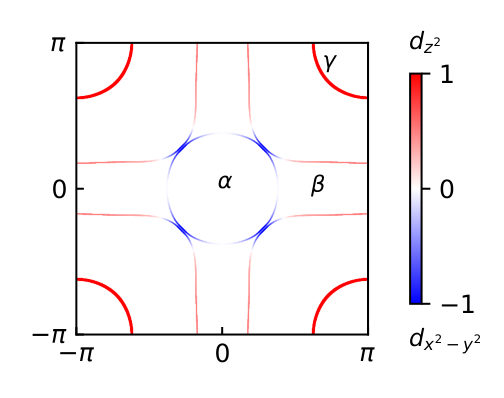
<figcaption class="paper-figure-caption"><b>Fig 1.</b> FIG. 1. Quasiparticle Fermi surface colored by the relative dx2−y2 orbital weight P x = 1 −2W x.</figcaption>
</figure>
<figure class="paper-figure-card">
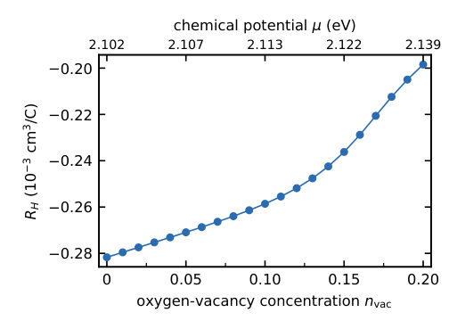
<figcaption class="paper-figure-caption"><b>Fig 2.</b> FIG. 2. Rigid-band RH as a function of nvac and µ.</figcaption>
</figure>
<figure class="paper-figure-card">
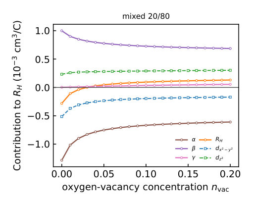
<figcaption class="paper-figure-caption"><b>Fig 3.</b> FIG. 4. Pocket-resolved (solid lines) and orbital-selective (dashed lines) contributions to RH for the mixed 20/80 distribution, with τ0 = 50 fs.</figcaption>
</figure>
<figure class="paper-figure-card">

<figcaption class="paper-figure-caption"><b>Fig 4.</b> FIG. 3. RH as a function of nvac for five oxygen-vacancy distributions, with τ0 = 50 fs. A mixed distribution a/b denotes a% inner-apical and b% in-plane oxygen vacancies.</figcaption>
</figure>
<figure class="paper-figure-card">
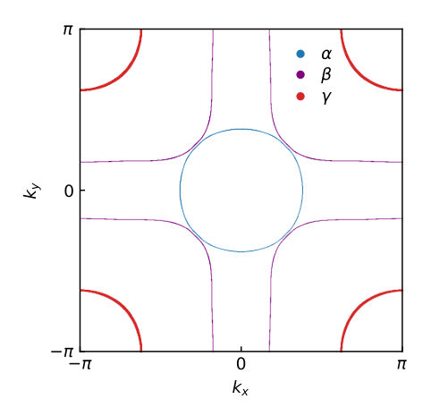
<figcaption class="paper-figure-caption"><b>Fig 5.</b> FIG. 5. Numerical pocket assignment on the 2048 × 2048 k mesh. Blue, magenta, and red points denote the α, β, and γ pockets, respectively.</figcaption>
</figure>
</div>

<p><strong>Summary.</strong> This theoretical study explains the anomalous sign reversal of the Hall coefficient in nickelate superconductors. The authors combine sophisticated correlated electron modeling with a Boltzmann transport approach to show that this effect arises not from simple doping, but from orbital-selective scattering caused by oxygen vacancies. This work provides a crucial microscopic understanding of stoichiometry dependence in these complex materials.</p>
<p><strong>Why it may be interesting.</strong> While focused on nickelates, the methodology—combining correlated electron models (DFT+CDMFT) with detailed impurity scattering theory within a transport framework—provides advanced techniques for analyzing how disorder affects electronic transport in strongly correlated materials.</p>
<details>
<summary>Detailed structure</summary>
<p><strong>Main problem.</strong> The study aims to microscopically explain the sign reversal observed in the Hall coefficient ($R_H$) measured in superconducting bilayer nickelate films.</p>
<p><strong>Main result.</strong> The sign reversal is attributed to orbital-selective scattering caused by oxygen vacancies, specifically showing that in-plane vacancies selectively suppress the $d_{x^2-y^2}$ orbital contribution, driving $R_H$ through zero.</p>
<p><strong>Method.</strong> A semi-classical Boltzmann transport framework is employed, incorporating a T-matrix treatment of oxygen-vacancy scattering potentials derived from DFT+CDMFT correlated multi-orbital quasiparticle models.</p>
<p><strong>Model / system.</strong> The system is superconducting bilayer nickelate films modeled using a correlated multi-orbital quasiparticle Hamiltonian. The analysis separates doping effects from impurity-scattering effects due to oxygen vacancies (inner-apical and in-plane).</p>
<p><strong>Key observables.</strong> Hall coefficient ($R_H$), pocket-resolved contributions ($   ext{R}_{    ext{u}} ext{H}$), and orbital-selective transport components.</p>
<p><strong>Important parameters / regimes.</strong> Oxygen vacancy concentration ($n_{	ext{vac}}$), chemical potential ($\mu$), and the relative scattering strength of different vacancy types (in-plane vs. inner-apical).</p>
<p><strong>Assumptions / limitations.</strong> The analysis uses a T-matrix approach for scattering, solves the Boltzmann equation using the scalar relaxation-time approximation, and treats vacancies as active scattering centers rather than just dopants.</p>
<p><strong>Figures summary.</strong> Figures illustrate the Fermi surface pockets ($\alpha, eta, \gamma$) colored by orbital weight; plots show $R_H$ vs. vacancy concentration demonstrating sign reversal driven by in-plane defects; other figures detail the dependence of $R_H$ on scattering time and doping.</p>
<p><strong>Paper structure.</strong> The paper establishes the problem (unexplained $R_H$ sign reversal), develops a theoretical framework combining DFT+CDMFT with Boltzmann transport, calculates pocket-resolved and orbital-selective contributions, and finally attributes the sign change to specific vacancy scattering mechanisms.</p>
</details>
<details>
<summary>Abstract</summary>
<p>Hall measurements in superconducting bilayer nickelate films show sign reversals that cannot be explained by rigid-band electron doping alone. We combine a DFT+CDMFT-derived correlated multi-orbital quasiparticle model with a $T$-matrix treatment of oxygen-vacancy scattering in a semiclassical Boltzmann transport framework. We find that multiband compensation is insufficient by itself: in-plane vacancies selectively suppress the transport channel dominated by the $d_{x^2-y^2}$ orbital and drive $R_H$ through zero, whereas inner-apical vacancies make $R_H$ more negative. These results identify pocket-resolved and orbital-selective oxygen-vacancy scattering as the microscopic origin of the Hall coefficient sign reversal and provide a framework for oxygen-stoichiometry-dependent transport in nickelate films.</p>
</details>
<p><sub><a href="#top">↑ back to top</a></sub></p>

<p><a id="paper-2607.05194"></a></p>
<h3 id="nucleation-and-time-reversal-symmetry-breaking-in-nonconserved-scalar-field-theories"><a href="http://arxiv.org/abs/2607.05194v1">Nucleation and time-reversal symmetry breaking in nonconserved scalar field theories</a></h3>
<p><strong>Authors:</strong> Noah Ziethen, Michalis Chatzittofi, Michael E. Cates, Cesare Nardini<br>
<strong>Type:</strong> theory · <strong>Category:</strong> statistical mechanics · <strong>PDF:</strong> <a href="https://arxiv.org/pdf/2607.05194v1">https://arxiv.org/pdf/2607.05194v1</a><br>
<strong>Analysis basis:</strong> full PDF text, analyzed in chunks
<strong>Topic relevance:</strong> <code>non-equilibrium dynamics</code> <strong>3/5</strong> · <code>non-equilibrium universality</code> <strong>3/5</strong> · <code>Keldysh / 2PI / non-Gaussian methods</code> <strong>1/5</strong> · <code>correlated / nonlocal dissipation</code> <strong>1/5</strong> · <code>driven-dissipative phase transition</code> <strong>1/5</strong> · <code>methods for driven-dissipative</code> <strong>1/5</strong></p>
<div class="figure-strip-hint">↔ Scroll figures horizontally</div>
<div class="paper-figures-scroll">
<figure class="paper-figure-card">
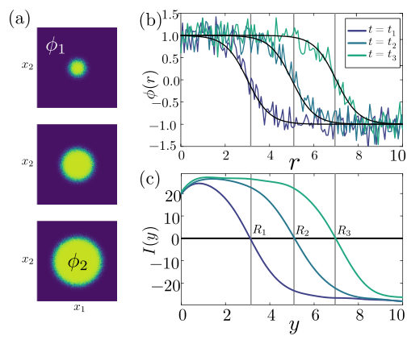
<figcaption class="paper-figure-caption"><b>Fig 1.</b> FIG. 1. (a) Nucleation of a two-dimensional spherical droplet; after reaching the critical radius, the ϕ2 phase invades the re- mainder by a deterministic relaxation. (b) Shape of the den- sity profile as a function of the radial coordinate (coloured lines) while the black solid lines correspond to the determin- istic (T = 0) φ(r) profiles. (c) Plot of I(y) defined in Eq. (5); The root I(R) = 0 defines the radius R of the droplet.</figcaption>
</figure>
<figure class="paper-figure-card">

<figcaption class="paper-figure-caption"><b>Fig 2.</b> FIG. 2. (a) The velocity of one-dimensional interface (v0) as a function of h, λ obtained from numerical integration of AMA via a pseudo-spectral method. For the simulations the number of points for space discretization is Nx = 1024, domain length L = 16π and dt = 10−3. The grey line corresponds to the perturbative result h = −4λ/15 for h, λ ≪1 [see Eq. (51)]. The solid black line is where the interface is static. (b) The normalized mobility of the interface along the static line in (a). (c) Numerical comparison of vψ 0 and vφ0 0 for h = 0.25, found via a pseudo-spectral method. (d) Example plot of the potential f(ϕ) for h = 0.1. At large enough λ, stability is reversed so that the globally...</figcaption>
</figure>
<figure class="paper-figure-card">

<figcaption class="paper-figure-caption"><b>Fig 3.</b> FIG. 3. Mobility (a) and quasi-potential (b) for the popula- tion dynamics model variants. The colored lines correspond to the solutions from the full profile φ0 (from evaluating nu- merically Eq. (14) in panel (a) and Eq. (15) in panel (b)) and the dashed lines from perturbation theory in small s−2/3. To obtain the continuum lines, the profile φ0 was found by nu- merically solving Eq. (63) with a simple explicit Euler scheme for T = 0. The quasi-potentials are evaluated for s = 0.65 and we considered D0 = 10−3 throughout.</figcaption>
</figure>
<figure class="paper-figure-card">
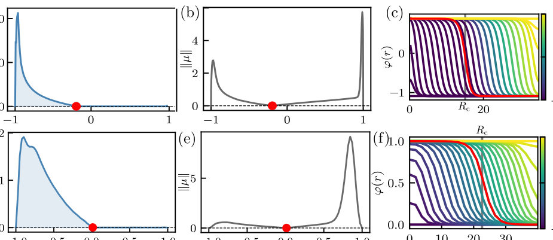
<figcaption class="paper-figure-caption"><b>Fig 4.</b> FIG. 4. Minimum action path for Active Model A (top row) and Population dynamics model with D = D(i)(ϕ)(bottom row) from a Ritz method based on [77]. (a, d) Lagrangian L(t) along the minimum action path. The red dots mark the saddles, where L(t) first vanishes. (b, e) Absolute value of the radially weighted drift ||µ|| (see Eq. 77) along the minimal action path, where the zero drift corresponds to the saddle. (c, f) Radial order parameter field φ(r) along minimal action path. The red lines correspond to the respective saddles where the drift vanishes. The vertical lines correspond to the extracted critical radii Rc. Parameters for AMA are λ = −1.033, h = 0.2 and for the population dynamics...</figcaption>
</figure>
<figure class="paper-figure-card">

<figcaption class="paper-figure-caption"><b>Fig 5.</b> FIG. 5. (a)-(b) Quasipotential barrier heights and critical radii obtained by numerical action minimization for AMA (dots) and the corresponding NNT prediction (solid line). The dashed line shows the prediction from the TRR ansatz. Data is shown for fixed h = 0.2 and varying λ = λ∗(h) + δλ where λ∗(0.2) = −0.8768. (c)-(d) Results on population dy- namics, the solid line shows our NNT predictions, and the red squares are the results from the numerical minimization. Re- sults for the equilibrium case, D(ϕ) = 1, and for D = D(i)(ϕ), are both shown. Numerical parameters as in Fig. 4 and D0 = 10−2.</figcaption>
</figure>
</div>

<p><strong>Summary.</strong> This paper develops Nonequilibrium Nucleation Theory (NNT) to describe phase transitions in fluctuating, non-conserved field theories beyond the scope of classical theory. It rigorously derives the dynamics by comparing stochastic projection methods with action minimization techniques. The work establishes a systematic framework for calculating nucleation rates in complex systems like active matter, emphasizing when and how time-reversal symmetry breaks down.</p>
<p><strong>Why it may be interesting.</strong> While focused on classical statistical mechanics, the rigorous treatment of non-equilibrium fluctuations and rare events using path integrals and large deviation theory has methodological overlaps with open quantum systems where dissipation and noise are key. The systematic framework for deriving effective potentials in non-equilibrium settings is valuable.</p>
<details>
<summary>Detailed structure</summary>
<p><strong>Main problem.</strong> The work aims to provide a full, rigorous account of Nonequilibrium Nucleation Theory (NNT), generalizing Classical Nucleation Theory (CNT) for systems where the order parameter is non-conserved.</p>
<p><strong>Main result.</strong> NNT provides a systematic framework that correctly predicts the quasipotential barrier in non-equilibrium settings, differing from assumptions based on time-reversal symmetry. The theory was successfully validated against numerical simulations for active matter and population dynamics models.</p>
<p><strong>Method.</strong> The authors employ two equivalent derivations: projecting the stochastic field equation onto the reaction coordinate (stochastic route) and minimizing the Freidlin-Wentzell action (action route).</p>
<p><strong>Model / system.</strong> The theory applies to nonconserved scalar field theories, modeled by stochastic differential equations $\partial_t \phi = -\mu[\phi] + \sqrt{D(\phi)}\xi$. Examples include Active Model A and population dynamics models.</p>
<p><strong>Key observables.</strong> Nucleation rate ($P$), quasipotential barrier height, critical radius ($R_c$), and the droplet radius ($R$) acting as the reaction coordinate.</p>
<p><strong>Important parameters / regimes.</strong> Noise strength ($T$), mobility ($M(R)$), and the functional form of the drift ($\mu[\phi]$) and noise amplitude ($D(\phi)$).</p>
<p><strong>Assumptions / limitations.</strong> The primary assumption is that a careful definition of the reaction coordinate allows for an analytical derivation, although it explicitly notes that assuming time-reversal symmetry (TRR) can lead to incorrect results for mobility and quasipotential in non-equilibrium cases.</p>
<p><strong>Figures summary.</strong> Figure 1 illustrates nucleation dynamics, showing droplet formation, density profiles versus radial coordinates, and the functional integral used to define the critical radius $R$.</p>
<p><strong>Paper structure.</strong> The paper first introduces NNT as a generalization of CNT. It then presents two derivations for the droplet dynamics (stochastic vs. action minimization), highlighting discrepancies when TRR is assumed. Finally, it applies the theory to concrete examples like Active Model A and population dynamics models.</p>
</details>
<details>
<summary>Abstract</summary>
<p>Classical nucleation theory (CNT) describes the formation of a stable phase from a metastable one in terms of a single reaction coordinate that corresponds to the radius of a nucleating droplet. In this work, we provide a full account of nonequilibrium nucleation theory (NNT), which generalizes CNT to non-equilibrium field theories with non-conserved order parameter. We present two equivalent derivations of the dynamics of the droplet radius: a stochastic route, based on a direct projection of the stochastic field equation onto the radial reaction coordinate, and a route based on the minimization of the Freidlin-Wentzell action. Crucially, the quasipotential barrier predicted by NNT differs from the one found when assuming the instanton to be the time-reversal of the relaxation dynamics. Whereas the interfacial density profile differs from that on the relaxation path, an analytical derivation of NNT remains possible using a careful definition of the reaction coordinate. This leverages the perturbative structure that (in common with CNT) emerges in the limit of large critical radius. We further derive with similar techniques the dynamics of capillary waves, whose stability is required for the CNT/NNT precept of a near-spherical droplet to prevail. After deriving our theory for generic non-conserved field-theories, we address two explicit examples: a non-equilibrium generalization of Model A (Active Model A), and a population dynamics model (with two choices of noise that each break time-reversal symmetry). In both cases, we validate our analytical NNT against numerical results obtained by action minimization, with excellent agreement. NNT provide a systematic framework for constructing nucleation theories in a broad class of non-equilibrium systems from active matter, reaction-diffusion systems and population dynamics.</p>
</details>
<p><sub><a href="#top">↑ back to top</a></sub></p>

<p><a id="paper-2607.05143"></a></p>
<h3 id="effective-field-theory-of-noncritical-m-theory-from-bosonization"><a href="http://arxiv.org/abs/2607.05143v1">Effective Field Theory of Noncritical M-theory from Bosonization</a></h3>
<p><strong>Authors:</strong> Patrick Jefferson, Tokiro Numasawa<br>
<strong>Type:</strong> theory · <strong>Category:</strong> strongly correlated electrons · <strong>PDF:</strong> <a href="https://arxiv.org/pdf/2607.05143v1">https://arxiv.org/pdf/2607.05143v1</a><br>
<strong>Analysis basis:</strong> full PDF text, analyzed in chunks
<strong>Topic relevance:</strong> <code>Keldysh / 2PI / non-Gaussian methods</code> <strong>3/5</strong> · <code>analog quantum simulation</code> <strong>2/5</strong> · <code>Kondo &amp; dissipative impurity</code> <strong>1/5</strong> · <code>entanglement &amp; information structure</code> <strong>1/5</strong> · <code>methods for driven-dissipative</code> <strong>1/5</strong> · <code>non-equilibrium dynamics</code> <strong>1/5</strong></p>
<div class="figure-strip-hint">↔ Scroll figures horizontally</div>
<div class="paper-figures-scroll">
<figure class="paper-figure-card">

<figcaption class="paper-figure-caption"><b>Fig 1.</b> Figure 1: The double scaling limit (2.2) effectively “zooms in” on the quadratic maximum of the potential in (2.1), in the process scaling away other non-universal features while holding fixed the renormalized Fermi level −µ. The figure on the right depicts the inverted harmonic oscillator potential, which is the universal potential that remains after taking the double-scaling limit. In both figures, the shaded region is the filled Fermi sea, with its boundary corresponding to the static Fermi surface (2.4).</figcaption>
</figure>
<figure class="paper-figure-card">
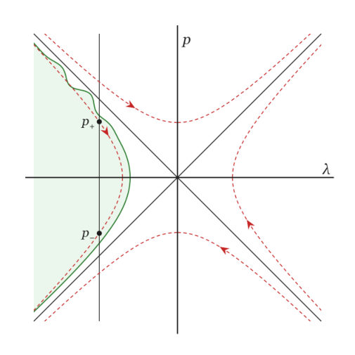
<figcaption class="paper-figure-caption"><b>Fig 2.</b> Figure 2: The shaded region is the filled c = 1 string Fermi sea. We can label the state of the Fermi sea in terms of the upper and lower surfaces p±(t, λ), which are indicated for a definite value of λ as an illustration. This is essentially a duplicate of Figure 25 in [20].</figcaption>
</figure>
<figure class="paper-figure-card">

<figcaption class="paper-figure-caption"><b>Fig 3.</b> Figure 3: The double scaling limit of noncritical M-theory is analogous to the double scaling limit of the c = 1 matrix model (compare to Figure 1). The Fermi sea is again filled up to a Fermi level −µ, but in this case the single particle dispersion is given by a two-dimensional rotationally-symmetric inverted harmonic oscillator potential. In the above images, the shaded region is the filled Fermi sea, with the image on the right illustrating the universal potential that survives the double-scaling limit.</figcaption>
</figure>
<figure class="paper-figure-card">

<figcaption class="paper-figure-caption"><b>Fig 4.</b> Figure 5: Comparison between the exact resolvent and its saddle-point approximation. The left panel shows the case p = 0.001, while the right panel corresponds to p = 1. The parameters are chosen as θ = π/20 and µ = 1. The qualitative behavior remains unchanged for sufficiently small |θ| and arbitrary µ.</figcaption>
</figure>
<figure class="paper-figure-card">
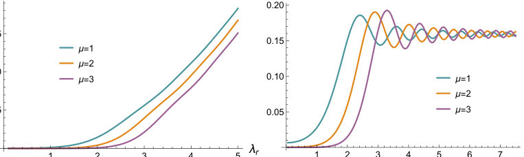
<figcaption class="paper-figure-caption"><b>Fig 5.</b> Figure 6: Representative plots of the exact density one-point function. The left panel shows the density ρ, while the right panel shows its derivative with respect to the Fermi energy, −∂ρ/∂µ.</figcaption>
</figure>
</div>

<p><strong>Summary.</strong> This paper develops an effective field theory for noncritical M-theory by applying advanced bosonization techniques to the system's underlying free fermion description. The authors demonstrate that their derived bosonic action correctly reproduces key physical observables, such as density correlation functions, in the semiclassical limit. This work provides a theoretical bridge between microscopic quantum many-body physics and emergent spacetime gravity descriptions.</p>
<p><strong>Why it may be interesting.</strong> The methodology—using bosonization techniques derived from geometric/coadjoint orbit approaches to study strongly interacting quantum systems (Fermi liquids)—is highly relevant for understanding emergent field theories in condensed matter physics beyond simple mean-field treatments.</p>
<details>
<summary>Detailed structure</summary>
<p><strong>Main problem.</strong> The central problem is constructing an effective spacetime gravity description for noncritical M-theory by relating its exact microscopic definition (free fermions) to a continuum field theory.</p>
<p><strong>Main result.</strong> The coadjoint-orbit bosonization method successfully reproduces known results in lower dimensions and shows that correlation functions calculated via the bosonic effective theory agree with semiclassical limits of the exact Fermi liquid calculations.</p>
<p><strong>Method.</strong> The authors extend the coadjoint orbit approach to bosonize double-scaled non-relativistic Fermi liquids, comparing this result against established matrix model descriptions and calculating density correlation functions perturbatively.</p>
<p><strong>Model / system.</strong> The primary system is Noncritical M-theory, modeled in 2+1 dimensions as a double-scaled nonrelativistic free fermion system or Fermi liquid. This serves as an analog to understanding string vacua.</p>
<p><strong>Key observables.</strong> Fermion density correlation functions (one-, two-, and three-point functions) for both eigenvalue and light-cone density operators.</p>
<p><strong>Important parameters / regimes.</strong> The dimensionality (1+1d vs 2+1d), the double-scaling limit, and the semiclassical regime are crucial parameters/limits explored.</p>
<p><strong>Assumptions / limitations.</strong> The analysis relies on extending the coadjoint orbit approach and assumes that the effective theory captures the physics of the exact Fermi liquid in the semiclassical limit. The connection to a precise 3D gravitational bulk remains an open question.</p>
<p><strong>Figures summary.</strong> Figure 1 illustrates the double scaling limit zooming into the quadratic maximum potential, showing the filled Fermi sea boundary corresponding to the static Fermi surface. Figure 11 compares exact and saddle point approximations of the resolvent.</p>
<p><strong>Paper structure.</strong> The paper builds by first establishing results in 1+1d (reproducing Das-Jevicki theory) before tackling the 2+1d noncritical M-theory case. It utilizes advanced techniques like coadjoint orbit methods, calculating correlation functions, and analyzing the resolvent via saddle-point approximations.</p>
</details>
<details>
<summary>Abstract</summary>
<p>We extend the coadjoint orbit approach to bosonization systematized by Delacretaz-Du-Mehta-Son to double-scaled non-relativistic Fermi liquids with central inverted harmonic oscillator potential. In 1+1d, this reproduces the Das-Jevicki collective field theory describing quasiparticle excitations of the $c=1$ matrix model. In 2+1d, this yields an effective field theory for noncritical M-theory, namely the 2+1d Fermi liquid proposed by Hořava and Keeler as a unified framework for characterizing noncritical string vacua. With a suitable gauge choice this theory reduces to a continuous family of 1+1d chiral bosons resembling Das-Jevicki collective fields coupled by additional interactions. Utilizing the underlying integrability of noncritical M-theory, we compute select fermion density correlation functions order-by-order in perturbation theory, and provide evidence that they agree with their Fermi liquid counterparts in a suitable semiclassical limit. This represents a step toward an effective spacetime gravity description of noncritical M-theory, which we expect to shed light on both the landscape of 2d noncritical strings and 3d quantum gravity in general.</p>
</details>
<p><sub><a href="#top">↑ back to top</a></sub></p>

<p><a id="paper-2607.04549"></a></p>
<h3 id="speed-limits-on-biomolecular-processes-from-fundamental-physical-constants"><a href="http://arxiv.org/abs/2607.04549v1">Speed limits on biomolecular processes from fundamental physical constants</a></h3>
<p><strong>Authors:</strong> Dmitrii E Makarov<br>
<strong>Type:</strong> theory · <strong>Category:</strong> statistical mechanics · <strong>PDF:</strong> <a href="https://arxiv.org/pdf/2607.04549v1">https://arxiv.org/pdf/2607.04549v1</a><br>
<strong>Analysis basis:</strong> full PDF text, analyzed in chunks
<strong>Topic relevance:</strong> <code>non-equilibrium dynamics</code> <strong>3/5</strong> · <code>non-equilibrium universality</code> <strong>2/5</strong> · <code>Keldysh / 2PI / non-Gaussian methods</code> <strong>1/5</strong> · <code>correlated / nonlocal dissipation</code> <strong>1/5</strong> · <code>driven-dissipative phase transition</code> <strong>1/5</strong> · <code>methods for driven-dissipative</code> <strong>1/5</strong></p>
<div class="figure-strip-hint">↔ Scroll figures horizontally</div>
<div class="paper-figures-scroll">
<figure class="paper-figure-card">

<figcaption class="paper-figure-caption"><b>Fig 1.</b> Figure 1. Kramers’ model of a chemical reaction</figcaption>
</figure>
</div>

<p><strong>Summary.</strong> This paper investigates the theoretical speed limits governing life processes, such as chemical reactions and protein folding. It uses advanced statistical mechanical tools like Kramers' theory to relate these rates to fundamental physical constants. The work highlights how anthropic arguments constrain molecular dynamics by linking kinetic timescales to universal ratios.</p>
<p><strong>Why it may be interesting.</strong> It bridges concepts from open quantum systems (dissipation via Langevin equation) and non-equilibrium statistical mechanics (rate theories), providing concrete examples where fundamental constants dictate biological feasibility.</p>
<details>
<summary>Detailed structure</summary>
<p><strong>Main problem.</strong> The paper examines fundamental physical constraints that set speed limits on various biomolecular processes, such as chemical reaction rates and protein folding kinetics.</p>
<p><strong>Main result.</strong> It establishes relationships between characteristic timescales (e.g., diffusion time vs. kinetic time) governed by the Arrhenius ratio, suggesting deep connections between molecular dynamics and fundamental constants.</p>
<p><strong>Method.</strong> The analysis combines classical statistical mechanics tools like the Langevin equation and Kramers' theory with quantum-mechanical rate estimates derived from transition state theory.</p>
<p><strong>Model / system.</strong> The models include elementary chemical reactions in solution (governed by Arrhenius law) and protein folding/diffusion, which is treated as a random coil undergoing Brownian motion in conformational space.</p>
<p><strong>Key observables.</strong> Reaction rates ($
u$), characteristic timescales ($    au_{Ey},    au_{vel},   au_{diff}$), and the dimensionless Arrhenius ratio ($A$).</p>
<p><strong>Important parameters / regimes.</strong> Fundamental constants like $\hbar, k_B$, temperature $T$, molecular dimensions ($R, a$), and friction coefficients ($\gamma$).</p>
<p><strong>Assumptions / limitations.</strong> Key approximations include using Stokes' formula for friction and assuming the validity of Kramers theory across different damping regimes.</p>
<p><strong>Paper structure.</strong> The paper progresses by first analyzing simple chemical reactions using Eyring/Kramers estimates, then extending this framework to macromolecular dynamics like protein folding, culminating in a discussion of how anthropic constraints tie these physical limits together.</p>
</details>
<details>
<summary>Abstract</summary>
<p>Many of the timescales of life have speed limits set by quantum-mechanical constraints along with non-fundamental quantities, such as the temperature of the environment, which are however bounded by anthropic considerations. Here, some of such speed limits are examined, including those for the rates of elementary chemical reactions and biomolecular folding. Limitations of simple back-of-envelope estimates are also discussed.</p>
</details>
<p><sub><a href="#top">↑ back to top</a></sub></p>

<p><a id="paper-2607.04876"></a></p>
<h3 id="a-unified-electrostatic-to-spin-framework-for-asymmetric-multi-gate-cmos-quantum-devices"><a href="http://arxiv.org/abs/2607.04876v1">A Unified Electrostatic-to-Spin Framework for Asymmetric Multi-Gate CMOS Quantum Devices</a></h3>
<p><strong>Authors:</strong> Zeheng Wang, Yan Liu, Yue Hao, Genquan Han<br>
<strong>Type:</strong> theory · <strong>Category:</strong> quantum information and computing · <strong>PDF:</strong> <a href="https://arxiv.org/pdf/2607.04876v1">https://arxiv.org/pdf/2607.04876v1</a><br>
<strong>Analysis basis:</strong> full PDF text, analyzed in chunks
<strong>Topic relevance:</strong> <code>exotic spin models in light-matter</code> <strong>3/5</strong> · <code>spintronics-quantum-optics interface</code> <strong>3/5</strong> · <code>Keldysh / 2PI / non-Gaussian methods</code> <strong>1/5</strong> · <code>analog quantum simulation</code> <strong>1/5</strong></p>
<div class="figure-strip-hint">↔ Scroll figures horizontally</div>
<div class="paper-figures-scroll">
<figure class="paper-figure-card">
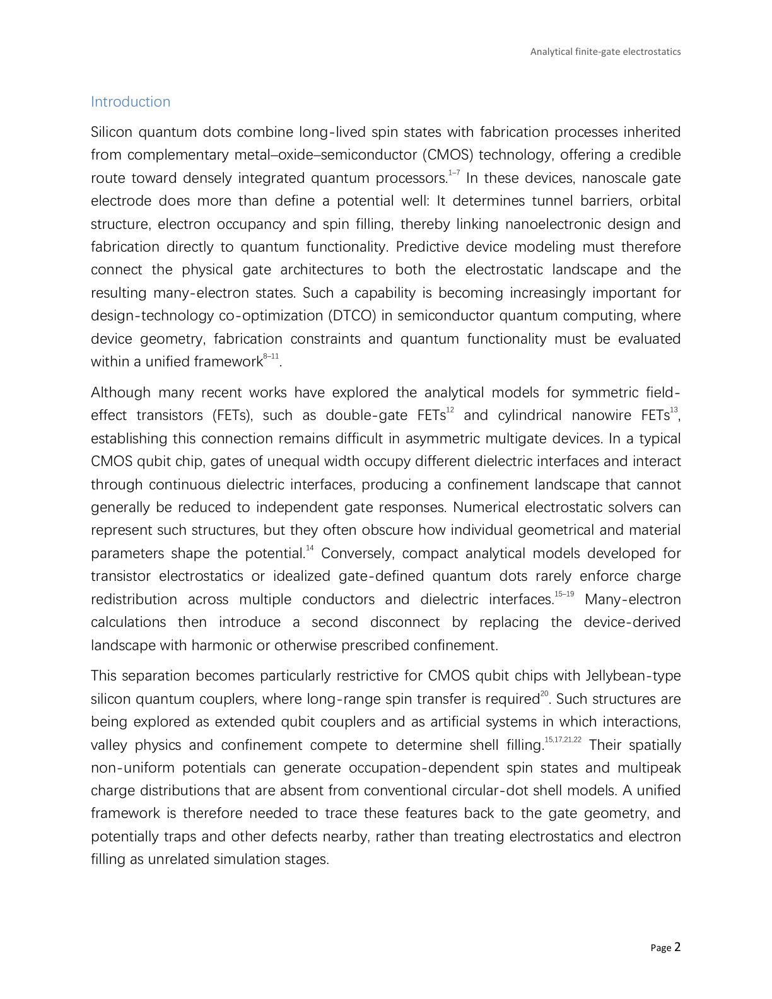
<figcaption class="paper-figure-caption"><b>Fig 1.</b> Low-resolution page preview, page 2</figcaption>
</figure>
<figure class="paper-figure-card">
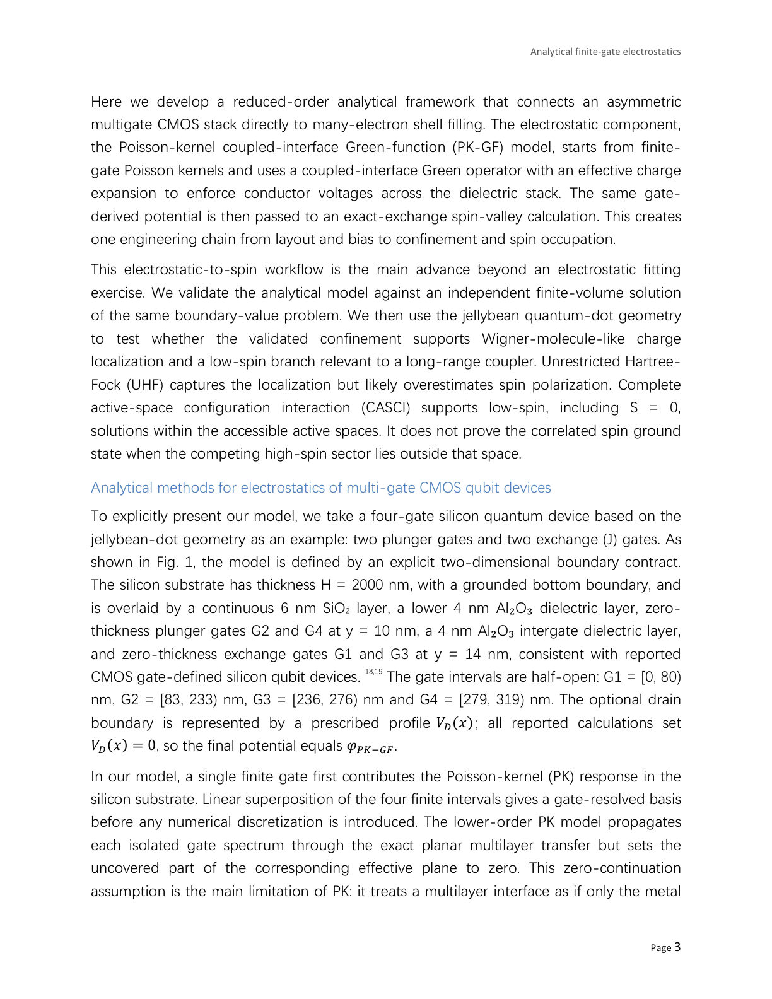
<figcaption class="paper-figure-caption"><b>Fig 2.</b> Low-resolution page preview, page 3</figcaption>
</figure>
<figure class="paper-figure-card">

<figcaption class="paper-figure-caption"><b>Fig 3.</b> Low-resolution page preview, page 4</figcaption>
</figure>
<figure class="paper-figure-card">

<figcaption class="paper-figure-caption"><b>Fig 4.</b> Low-resolution page preview, page 5</figcaption>
</figure>
<figure class="paper-figure-card">

<figcaption class="paper-figure-caption"><b>Fig 5.</b> Low-resolution page preview, page 6</figcaption>
</figure>
</div>

<p><strong>Summary.</strong> The paper introduces an end-to-end analytical framework that models electron behavior in advanced CMOS quantum dots. It first solves the complex electrostatics using a novel PK-GF model, validating it against finite-volume methods. This potential then drives many-body calculations (UHF/CASCI) to predict spin and charge localization, providing a vital tool for designing solid-state qubits.</p>
<p><strong>Why it may be interesting.</strong> This work provides a crucial, auditable theoretical bridge connecting semiconductor device engineering (CMOS layout) directly to the quantum mechanical properties required for qubit operation, which is highly relevant for solid-state quantum computing architectures.</p>
<details>
<summary>Detailed structure</summary>
<p><strong>Main problem.</strong> The primary challenge is developing a unified model that connects lithographic CMOS geometry, device electrostatics, and many-electron spin filling in advanced quantum dot qubits.</p>
<p><strong>Main result.</strong> The developed PK-GF framework successfully links the physical layout to quantum observables, showing CASCI supports low-spin states consistent with experimental expectations for qubit design.</p>
<p><strong>Method.</strong> The work combines a reduced-order analytical electrostatic model (PK-GF) validated against finite-volume solutions, which then feeds into advanced many-body calculations using UHF and CASCI methods.</p>
<p><strong>Model / system.</strong> The system is an asymmetric multi-gate silicon quantum dot ('jellybean' geometry) fabricated in a CMOS structure. The Hamiltonian is solved by first determining the gate-derived confinement potential via the PK-GF model, which then governs the spin-valley many-body physics.</p>
<p><strong>Key observables.</strong> Electron occupancy, charge localization (Wigner-molecule-like), ground state spin ($S=0$), and the interaction-to-level-spacing ratio ($R$).</p>
<p><strong>Important parameters / regimes.</strong> Gate voltages (millivolt scale), magnetic field ($B=5 	ext{ T}$), electron number ($N=2-17$).</p>
<p><strong>Assumptions / limitations.</strong> The PK-GF model assumes a coupled boundary system for charge redistribution; UHF is noted to likely overestimate spin polarization, and CASCI convergence requires careful active space selection.</p>
<p><strong>Figures summary.</strong> Figures illustrate the comparison between electrostatic models (PK vs. PK-GF vs. FV) and show diagnostics like charge density lobes, correlation functions, and energy spectra comparing UHF predictions against correlated CASCI results.</p>
<p><strong>Paper structure.</strong> The paper progresses by first establishing the robust electrostatic framework ($   ext{CMOS layout}    o   ext{Electrostatics}$ using $    ext{PK-GF}$). This potential is then passed to the many-body physics calculation ($   ext{Potential}  o   ext{Quantum Observables}$) using UHF and CASCI, culminating in a full end-to-end workflow demonstration.</p>
</details>
<details>
<summary>Abstract</summary>
<p>In advanced complementary metal-oxide-semiconductor (CMOS) quantum chips, compact gate stacks make it difficult to connect lithographic geometry, electrostatic confinement and many-electron spin filling in one transparent model. This connection is central to design-technology co-optimization (DTCO). Here we develop a reduced-order analytical framework for asymmetric multigate silicon quantum-dot devices. Its electrostatic core, the Poisson-kernel coupled-interface Green-function (PK-GF) model, agrees with an independent finite-volume solution at the millivolt scale for the matched two-dimensional problem, without fitting to that solution. We then pass the gate-derived confinement, rather than a harmonic or fitted potential, to a spin-valley many-body calculation for a jellybean quantum dot with N = 2-17 electrons at B = 5 T. The unrestricted Hartree-Fock (UHF) solution supports occupation-dependent, Wigner-molecule-like charge localization but likely overestimates spin polarization. Complete active-space configuration interaction (CASCI) supports a low-spin branch within the tested active spaces, which aligns with the experiments. The workflow therefore connects CMOS layout, device electrostatics, and potential-determined quantum observables, providing an auditable modelling layer for CMOS-based qubit design and DTCO.</p>
</details>
<p><sub><a href="#top">↑ back to top</a></sub></p>

<p><a id="paper-2607.03636"></a></p>
<h3 id="from-the-hong-ou-mandel-effect-to-quantum-sensing-interference-of-nonclassical-light-with-partial-distinguishability-and-noise"><a href="http://arxiv.org/abs/2607.03636v1">From the Hong-Ou-Mandel Effect to Quantum Sensing: Interference of Nonclassical Light with Partial Distinguishability and Noise</a></h3>
<p><strong>Authors:</strong> Matheus Eiji Ohno Bezerra<br>
<strong>Type:</strong> theory · <strong>Category:</strong> quantum information and computing · <strong>PDF:</strong> <a href="https://arxiv.org/pdf/2607.03636v1">https://arxiv.org/pdf/2607.03636v1</a><br>
<strong>Analysis basis:</strong> full PDF text, analyzed in chunks
<strong>Topic relevance:</strong> <code>interference shaping light</code> <strong>3/5</strong> · <code>Keldysh / 2PI / non-Gaussian methods</code> <strong>1/5</strong> · <code>correlated / nonlocal dissipation</code> <strong>1/5</strong> · <code>driven-dissipative phase transition</code> <strong>1/5</strong> · <code>methods for driven-dissipative</code> <strong>1/5</strong></p>
<div class="figure-strip-hint">↔ Scroll figures horizontally</div>
<div class="paper-figures-scroll">
<figure class="paper-figure-card">

<figcaption class="paper-figure-caption"><b>Fig 1.</b> Figure 2.1: Representation of the construction of a M-mode interferometer in terms of el- ements of linear optics: beamsplitters (blue) and phase shifters (red). Indeed, the entire interferometer is represented by a matrix that is an element of the group U(M), while the elements are matrices belonging to the groups SU(2) and U(1) respectively.</figcaption>
</figure>
<figure class="paper-figure-card">

<figcaption class="paper-figure-caption"><b>Fig 2.</b> Figure 2.2: Illustration of the operators acting on the phase space (a) Displacement operator ˆDk(αk), defined in Eq. (2.68), (b) Single-mode squeezing ˆSk(r), defined in Eq. (2.81).</figcaption>
</figure>
<figure class="paper-figure-card">
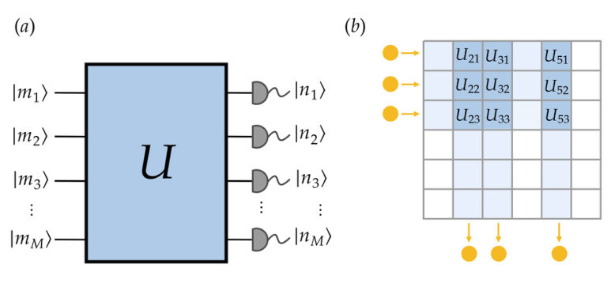
<figcaption class="paper-figure-caption"><b>Fig 3.</b> Figure 3.1: (a) Illustration of the scheme for the interference of N photons prepared in the input Fock state |m⟩a, with m = (m1, . . . , mM), and detected in the output Fock state |n⟩b, with n = (n1, . . . , nM), after interference at the multiport U. (b) Example of three-photon interference in a six-mode interferometer: the photons are prepared in the input configuration m3 = (1, 1, 1, 0, 0, 0) and detected in the output configuration n3 = (0, 1, 1, 0, 1, 0). The associated input and output mode label vectors are k = (1, 2, 3) and l = (2, 3, 5), respectively, where Ulk denotes the transition amplitude from input mode k to output mode l, as defined in Eq. (2.45).</figcaption>
</figure>
<figure class="paper-figure-card">

<figcaption class="paper-figure-caption"><b>Fig 4.</b> Figure 3.2: Schematic representation of the two interferometers used to illustrate the proposed method: a) Beamsplitter, that transforms two input modes into two output modes; b) Tritter, that is a composition of three different beamsplitters B1, B2, B3 and a control phase shifter φ. Here, each mk denotes the number of photons prepared in the input mode k and nl denotes the number of photons detected in the output mode l.</figcaption>
</figure>
<figure class="paper-figure-card">
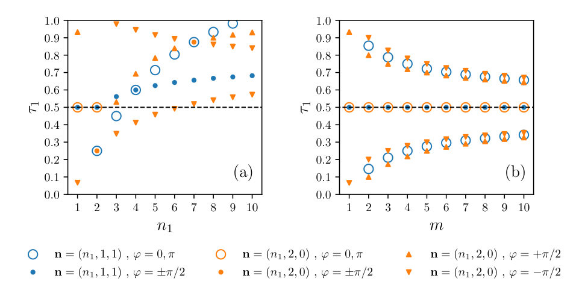
<figcaption class="paper-figure-caption"><b>Fig 5.</b> Figure 3.3: Suppression laws for the tritter T(τ1, φ) defined in Eq. (3.33). In both graphs is shown value of the transmissivity τ1 that suppresses the corresponding amplitudes. Panel (a) presents the suppression laws for the amplitudes b⟨n1, nS|n1, 1, 1⟩a = 0 while panel (b) presents the suppression laws for the amplitudes b⟨n1, nS|m, m, m⟩a = 0.</figcaption>
</figure>
</div>

<p><strong>Summary.</strong> This thesis analyzes how nonclassical light interference, exemplified by the Hong-Ou-Mandel effect, behaves when subjected to partial photon distinguishability and environmental noise. Using advanced mathematical tools in phase space, it derives new suppression laws for Fock states and extends Gaussian Boson Sampling theory. The findings establish fundamental limits on quantum sensing precision even when optimizing state preparation.</p>
<p><strong>Why it may be interesting.</strong> This work directly tackles the robustness of fundamental quantum optical phenomena against realistic imperfections like distinguishability and noise, which is crucial for building scalable quantum sensors and computing architectures.</p>
<details>
<summary>Detailed structure</summary>
<p><strong>Main problem.</strong> The study investigates how quantum interference of nonclassical light (Fock and Gaussian states) is affected by realistic noise sources, specifically partial distinguishability and photon loss.</p>
<p><strong>Main result.</strong> New suppression laws are identified for multi-photon Fock states, and the analysis shows that while probe incompatibility can vanish under optimal conditions, measurement incompatibility remains a fundamental constraint at high photon numbers.</p>
<p><strong>Method.</strong> The research employs the phase-space formalism and develops analytical tools using generating functions to describe quantum optical interference in a unified manner.</p>
<p><strong>Model / system.</strong> The system models light interference within linear interferometers, utilizing Fock states (multi-photon quanta) and Gaussian states. The underlying physics is derived from quantizing the electromagnetic field in a finite volume.</p>
<p><strong>Key observables.</strong> Interference patterns, zero probability events (suppression laws), Quantum Fisher Information for estimation, and visibility of interference effects.</p>
<p><strong>Important parameters / regimes.</strong> Photon distinguishability, photon number ($n$), phase shift ($\phi$), and loss rates ($\gamma$).</p>
<p><strong>Assumptions / limitations.</strong> The analysis assumes the use of nonclassical light states (Fock/Gaussian) and models noise through partial distinguishability and losses in linear interferometers.</p>
<p><strong>Paper structure.</strong> The thesis structure progresses from foundational quantum optics concepts (like HOM interference for Fock states) to extensions involving Gaussian Boson Sampling with partial distinguishability, culminating in an examination of joint multiparameter estimation (phase and loss).</p>
</details>
<details>
<summary>Abstract</summary>
<p>This thesis explores the interference of nonclassical states of light, particularly Fock and Gaussian states, in noisy linear interferometers, with applications to quantum information and quantum sensing. Using the phase-space formalism, analytical tools based on generating functions are developed to describe quantum optical interference in a unified way. For multiphoton Fock states, new zero probability events (suppression laws) are identified beyond the previously derived symmetry permutation principle, revealing rich interference structures that is degraded with photon distinguishability. For Gaussian states, the Hafnian-based description of Gaussian Boson Sampling is extended to include partial distinguishability via the overlap matrix of the internal state of the photons. Finally, the link between these interference effects and quantum multiparameter estimation is examined for the simultaneous estimation of phase and loss. This study shows that while probe incompatibility can vanish for optimized non-Gaussian states and some two-mode Gaussian states, at high photon number, measurement incompatibility remains a fundamental constraint even in this limit.</p>
</details>
<p><sub><a href="#top">↑ back to top</a></sub></p>

<p><a id="paper-2607.04252"></a></p>
<h3 id="universal-fluctuations-of-first-discoveries-in-competitive-exploration"><a href="http://arxiv.org/abs/2607.04252v1">Universal fluctuations of first discoveries in competitive exploration</a></h3>
<p><strong>Authors:</strong> Arthur Plaud, P. L. Krapivsky, S. Redner, Olivier Bénichou<br>
<strong>Type:</strong> theory · <strong>Category:</strong> statistical mechanics · <strong>PDF:</strong> <a href="https://arxiv.org/pdf/2607.04252v1">https://arxiv.org/pdf/2607.04252v1</a><br>
<strong>Analysis basis:</strong> full PDF text, analyzed in chunks
<strong>Topic relevance:</strong> <code>non-equilibrium universality</code> <strong>3/5</strong> · <code>non-equilibrium dynamics</code> <strong>2/5</strong> · <code>Keldysh / 2PI / non-Gaussian methods</code> <strong>1/5</strong> · <code>driven-dissipative phase transition</code> <strong>1/5</strong></p>
<div class="figure-strip-hint">↔ Scroll figures horizontally</div>
<div class="paper-figures-scroll">
<figure class="paper-figure-card">

<figcaption class="paper-figure-caption"><b>Fig 1.</b> FIG. 1. Competitive exploration requires a missing observable. a, First-discovery allocation. Two identical searchers explore a landscape in which each site initially carries one unclaimed resource. Grey sites are undiscovered; coloured sites have been discovered and are labelled by the searcher that reached them first; hatched sites have been visited by both searchers. Classical observables measure collective coverage or geometric interference, but not which searcher secured each discovery. b, Self-averaging transition. We tag one searcher and set Ik = 1 if the k-th collective discovery is secured by this tagged searcher, and Ik = 0 otherwise. The discovery share Xn = n−1 Pn k=1 Ik has...</figcaption>
</figure>
<figure class="paper-figure-card">

<figcaption class="paper-figure-caption"><b>Fig 2.</b> FIG. 2. First-discovery label correlations underlie the discovery-share fluctuation phase diagram. a, Discovery-share fluctuation regimes. The spectral dimension ds, defined by the on-site decay p0(t) ∼t−ds/2, separates persistent randomness (ds &lt; 2), anomalously slow non-Gaussian concentration (2 ≤ds &lt; 3), and Gaussian concentration (ds ≥3), with logarithmic corrections at ds = 3. b, Discovery-share variance. Simulations for two identical searchers on a one-dimensional lattice with a general symmetric jump law (simulation details given in the SI) confirm Eq. (4): non-zero limiting variance for ds &lt; 2, anomalous decay for 2 &lt; ds &lt; 3, and 1/n Gaussian decay for ds &gt; 3. c, Discovery-label...</figcaption>
</figure>
<figure class="paper-figure-card">

<figcaption class="paper-figure-caption"><b>Fig 3.</b> FIG. 3. Site-discovery order shapes broad recurrent fluctuations. In recurrent exploration, discovery-label correlations prevent self-averaging, but the limiting law also depends on the spatial order in which sites are discovered. a, Deterministic versus random site-discovery order. The black dot marks the starting point. Red and blue sites are first discovered by the two competitors, respectively. In the one-sided geometry, the first n collective discoveries are necessarily the sites 1, . . . , n, so the spatial order of discovery is deterministic. In the symmetric geometry, discoveries can occur on either side of the origin, and the left-right order of discovered sites is random. b,...</figcaption>
</figure>
<figure class="paper-figure-card">

<figcaption class="paper-figure-caption"><b>Fig 4.</b> FIG. 4. Discovery-share fluctuation regimes persist beyond the minimal model. Numerical simulations of representative extensions show that the fluctuation structure predicted by the analytical framework is robust to changes in microscopic dynamics, geometry and competitive setting. The simulations use one-dimensional heavy-tailed jump processes in panels a and b, simple diffusion on fractal substrates in panel c, and fractional Brownian motion in panel d. Small schematics in the panels illustrate the corresponding extension. a, Unequal mobilities. When the two competitors have unequal mobilities, here implemented by different jump scales, the mean discovery share is shifted away from 1/2;...</figcaption>
</figure>
</div>

<p><strong>Summary.</strong> This work develops a general fluctuation theory for competitive exploration by analyzing the 'discovery share' of two searchers. The key finding links the persistence of early advantages to the spectral dimension ($d_s$) of the underlying random walk medium. A critical threshold at $d_s=2$ separates regimes where initial imbalances are erased from those where they persist.</p>
<p><strong>Why it may be interesting.</strong> While focused on random walks, the concept of 'memory' and how local advantages (first arrival) are erased or persist over time is highly relevant to non-equilibrium dynamics in complex systems, such as pattern formation or resource competition modeled using stochastic processes.</p>
<details>
<summary>Detailed structure</summary>
<p><strong>Main problem.</strong> The paper investigates the universal fluctuations of the 'discovery share' ($X_n$)—the fraction of first discoveries secured by a tagged searcher—in competitive exploration.</p>
<p><strong>Main result.</strong> The persistence of early competitive advantages depends critically on the spectral dimension ($d_s$): $d_s < 2$ implies persistent randomness, while $d_s \ge 2$ leads to concentration towards an equal split ($\langle X_n 
angle = 1/2$).</p>
<p><strong>Method.</strong> The analysis uses asymptotic methods based on the spectral dimension ($d_s$), which characterizes the large-time decay of single-walker return probabilities, leading to distinct scaling laws for the variance $ ext{Var}(X_n)$.</p>
<p><strong>Model / system.</strong> The model involves two identical searchers competitively exploring a landscape (random walk). The dynamics are analyzed across various media characterized by their spectral dimension ($d_s$), including ordinary diffusion, superdiffusion, and subdiffusion.</p>
<p><strong>Key observables.</strong> Discovery Share ($X_n$), $   ext{Var}(X_n)$, two-point correlations of first-discovery labels ($    ext{Cov}(I_k, I_{k+\ell})$), and the spectral dimension ($d_s$).</p>
<p><strong>Important parameters / regimes.</strong> Spectral Dimension ($d_s$); critical thresholds at $d_s=2$ (the self-averaging threshold) and $d_s=3$.</p>
<p><strong>Assumptions / limitations.</strong> The analysis assumes Markovian searchers and initially focuses on two identical competitors, though the theory is shown to generalize.</p>
<p><strong>Figures summary.</strong> Figures illustrate the transition from persistent randomness ($d_s < 2$) to concentration towards $1/2$ ($d_s \ge 2$), showing how the spectral dimension governs this phase structure across different diffusion regimes.</p>
<p><strong>Paper structure.</strong> The paper establishes the definition of the discovery share and introduces the role of the spectral dimension. It then derives the asymptotic variance laws for various $d_s$ regimes, analyzes the memory mechanism via two-point correlations, and concludes by generalizing these fluctuation theories to other physical parameters.</p>
</details>
<details>
<summary>Abstract</summary>
<p>Random exploration is usually quantified by how fast new space is found, from   the range of a single walker to the territory collectively covered by many   walkers. In competitive exploration, first arrival secures an exclusive resource, as when foragers compete for food items or agents capture distributed targets. It is then no longer enough to know which sites have been discovered: one must determine, for each discovered site, which searcher reached it first. We introduce the discovery   share $X_n$, the fraction of the first $n$ collective discoveries secured by   a tagged searcher. For two identical competitors, exchange symmetry fixes   $\langle X_n\rangle=1/2$, but the central question is whether this equal   split emerges in each long exploration history or only on average, \emph{i.e.} whether early   competitive advantages are erased or persist. Here we show that the answer is   controlled by the spectral dimension $d_s$, defined by the large-time decay of the probability that a single searcher is at   its starting point after $t$ steps, $p_0(t)\sim t^{-d_s/2}$.   Across ordinary diffusion, long-range superdiffusion and subdiffusion induced   by crowding or memory, $d_s$ separates persistent randomness in   recurrent exploration $(d_s<2)$, anomalously slow non-Gaussian concentration   for $2\le d_s<3$, and Gaussian concentration, logarithmically corrected at   $d_s=3$, for $d_s\ge3$. For $d_s\ge2$, we derive exact asymptotic   variances, including prefactors, and the discovery scale on which competitive   imbalances are erased. Two-point correlations of first-discovery labels identify the memory mechanism behind these regimes.   The same phase structure persists under changes in geometry, competitor   heterogeneity, number of competitors and memory, revealing a general fluctuation   theory of first-arrival inequalities.</p>
</details>
<p><sub><a href="#top">↑ back to top</a></sub></p>

<p><a id="paper-2607.03909"></a></p>
<h3 id="algebra-of-quantum-mechanics-textitvia-classical-phonons-ii-klein-gordon-dynamics-the-heisenberg-formalism-the-dirac-canonical-commutation-rule-and-the-poincare-algebra-through-the-continuous-poisson-bracket-formalism"><a href="http://arxiv.org/abs/2607.03909v1">Algebra of quantum mechanics \textit{via} classical phonons. II: Klein-Gordon dynamics, the Heisenberg formalism, the Dirac canonical commutation rule and the Poincaré algebra through the continuous Poisson bracket formalism</a></h3>
<p><strong>Authors:</strong> Emmanuel Giner<br>
<strong>Type:</strong> theory · <strong>Category:</strong> other · <strong>PDF:</strong> <a href="https://arxiv.org/pdf/2607.03909v1">https://arxiv.org/pdf/2607.03909v1</a><br>
<strong>Analysis basis:</strong> full PDF text, analyzed in chunks
<strong>Topic relevance:</strong> <code>Frenkel-Kontorova</code> <strong>3/5</strong> · <code>Keldysh / 2PI / non-Gaussian methods</code> <strong>1/5</strong> · <code>analog quantum simulation</code> <strong>1/5</strong> · <code>non-equilibrium dynamics</code> <strong>1/5</strong></p>
<div class="figure-strip-hint">↔ Scroll figures horizontally</div>
<div class="paper-figures-scroll">
<figure class="paper-figure-card">

<figcaption class="paper-figure-caption"><b>Fig 1.</b> FIG. 1. Pictorial representation of the Frenkel-Kontorova model used here: un(t) is the real number representing the transverse displacement, Kn the ”on-site” harmonic force and K the ”between-site” harmonic force.</figcaption>
</figure>
</div>

<p><strong>Summary.</strong> This paper develops an advanced formalism showing how relativistic quantum mechanics can be derived from a purely classical phonon model using continuous Poisson brackets. By mapping these classical structures onto quantum commutators, the authors establish a deep mathematical equivalence between the Heisenberg picture and classical phase space dynamics. This framework successfully recovers fundamental symmetries like the Poincaré algebra.</p>
<p><strong>Why it may be interesting.</strong> This work provides a powerful mathematical framework for deriving fundamental symmetries (like Poincaré invariance) directly from classical field theories through canonical quantization procedures generalized via Poisson brackets.</p>
<details>
<summary>Detailed structure</summary>
<p><strong>Main problem.</strong> The paper aims to establish a rigorous mathematical link between classical mechanics (via phonon models) and relativistic quantum mechanics by utilizing the continuous Poisson bracket formalism.</p>
<p><strong>Main result.</strong> It demonstrates that the structure of classical Poisson brackets can be shown to be strictly equivalent to the commutators of Hermitian operators, successfully recovering the Poincaré algebra for 1+1 dimensions.</p>
<p><strong>Method.</strong> The methodology involves defining dynamics using classical Hamiltonian formalisms on a phonon model, followed by a non-local complex change of variables to map real-valued Poisson brackets onto quantum commutators.</p>
<p><strong>Model / system.</strong> The primary system is a purely classical phonon model (related to the Frenkel-Kontorova lattice) used as an analogue for deriving relativistic dynamics for a single spinless particle, leading to Klein-Gordon field equations in the continuum limit.</p>
<p><strong>Key observables.</strong> Classical observables, quantum expectation values, Poisson brackets $\{F, G\}$, and Poincaré group generators ($  ilde{P}_0,  ilde{P}_1, K$).</p>
<p><strong>Important parameters / regimes.</strong> The analysis explores limits such as the non-relativistic limit ($c 	o \infty$) and the continuum limit ($N 	o \infty$), which are crucial for connecting discrete lattice models to field theories.</p>
<p><strong>Assumptions / limitations.</strong> The derivation relies on a specific, non-local complex change of variables to bridge the gap between real-valued classical functionals and complex quantum operators.</p>
<p><strong>Figures summary.</strong> Figure 1 illustrates the physical setup of the Frenkel-Kontorova model showing displacements and forces. Table I summarizes various field variables (discreteness/continuity) used throughout the analysis.</p>
<p><strong>Paper structure.</strong> The paper progresses from establishing non-relativistic QM recovery in Part I, to focusing on relativistic Klein-Gordon dynamics using Poisson brackets in Part II, then proving the equivalence between Poisson brackets and commutators in Part V, culminating in the derivation of the Poincaré algebra structure in Part VI.</p>
</details>
<details>
<summary>Abstract</summary>
<p>In the first part of this series we have shown how the Schrodinger equation for a single particle and the corresponding non relativistic quantum observables can be obtained from a purely classical phonon model through the Newtonian equations of motion. In this work we focus instead on how the classical Hamiltonian formalism applied to the same phonon system allows to recover the feature of relativistic quantum mechanics for a single spinless particle. Using the classical nature of the phonon model, we naturally define continuous Poisson brackets between classical observables, which allows to recover the dynamics of such observables, i.e. the Ehrenfest relations associated to real-valued Klein-Gordon fields. The Poisson brackets also permits to obtain the generic form of constants of motions, thus generalizing the concept of inner products and momentum on Klein-Gordon fields. We then connect the formalism of real-valued classical functionals with that of hermitian operators and complex-valued wave functions. This is done through the introduction of a non-local complex-valued change of variables which allows to rewrite the real-valued Klein-Gordon equation in a form akin to the Schrodinger equation, and the classical observables as quantum expectation values. Then, we show how this change of variables allows to rewrite the classical Poisson brackets as commutators of hermitian operators. This points out the strict equivalence between the Heisenberg formalism and the formalism of classical Poisson bracket. Eventually, we illustrate how the Poisson brackets allows to recover the transformations of Poincaré group in 1+1 dimension together with its algebra. The latter makes the link between the Lorentz invariant inner product of Mostafazadeh and the Casimir invariant associated to the mass of particle.</p>
</details>
<p><sub><a href="#top">↑ back to top</a></sub></p>

<p><a id="paper-2607.04168"></a></p>
<h3 id="cuprate-d-wave-superconductivity-based-on-non-perturbative-many-body-theory-for-spin-fluctuation"><a href="http://arxiv.org/abs/2607.04168v1">Cuprate d-wave superconductivity based on Non perturbative many body theory for spin fluctuation</a></h3>
<p><strong>Authors:</strong> Jianwei Gong, Junnian Xiong, Ruitao Xiao, Hui Li, Ziyu Li, Huaqing Huang, Dingping Li<br>
<strong>Type:</strong> theory · <strong>Category:</strong> strongly correlated electrons · <strong>PDF:</strong> <a href="https://arxiv.org/pdf/2607.04168v1">https://arxiv.org/pdf/2607.04168v1</a><br>
<strong>Analysis basis:</strong> full PDF text, analyzed in chunks
<strong>Topic relevance:</strong> <code>Keldysh / 2PI / non-Gaussian methods</code> <strong>3/5</strong> · <code>analog quantum simulation</code> <strong>1/5</strong> · <code>exotic spin models in light-matter</code> <strong>1/5</strong> · <code>methods for driven-dissipative</code> <strong>1/5</strong></p>
<div class="figure-strip-hint">↔ Scroll figures horizontally</div>
<div class="paper-figures-scroll">
<figure class="paper-figure-card">
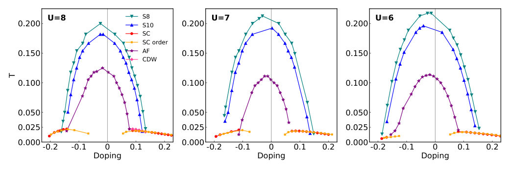
<figcaption class="paper-figure-caption"><b>Fig 1.</b> FIG. 1: Numerical phase diagram of the Hubbard model for different interaction strengths U with fixed next-nearest-neighbor hopping t′ = −0.25 and lattice size 32 × 32. SC order: stable boundary with ∆d ̸= 0; SC: divergence boundary of χd(0, 0, 0); S8/S10: contours of χs(QAF, 0) = 8, 10; AF: onset of antiferromagnetic order; CDW: divergence of χc(QCDW, 0).</figcaption>
</figure>
<figure class="paper-figure-card">

<figcaption class="paper-figure-caption"><b>Fig 2.</b> FIG. 2: Magnitude of the d-wave superconducting order parameter |∆d| as a function of doping density in the hole-doped region for t′ = −0.25, U = 8, and lattice size N = 32 × 32 at various temperatures.</figcaption>
</figure>
<figure class="paper-figure-card">
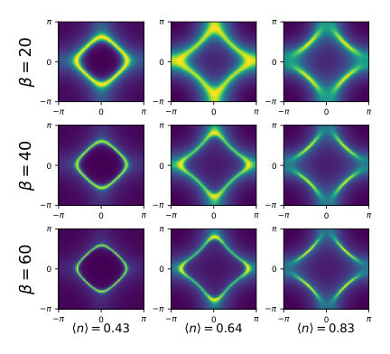
<figcaption class="paper-figure-caption"><b>Fig 3.</b> FIG. 3: Color plots of ∂nk/∂µ for the Hubbard model with U = 8 and t′ = −0.25 on a 64 × 64 square lattice. The three columns correspond to different hole-doping levels, and the three rows correspond to different inverse temperatures β (from top to bottom: β = 20, 40, 60).</figcaption>
</figure>
</div>

<p><strong>Summary.</strong> This work develops and applies a sophisticated, non-perturbative spin GW method to study high-Tc superconductivity in the Hubbard model. It successfully maps out the complex phase diagram showing competition between antiferromagnetism, charge density waves, and d-wave superconductivity. The results provide quantitative agreement with experiments by treating strong correlations rigorously.</p>
<p><strong>Why it may be interesting.</strong> While focused on cuprates, the development of a robust, sign-problem-free non-perturbative many-body technique (spin GW) for strongly correlated systems provides advanced theoretical tools applicable to other quantum materials exhibiting strong correlations.</p>
<details>
<summary>Detailed structure</summary>
<p><strong>Main problem.</strong> The primary goal is understanding the microscopic origin of high-Tc superconductivity in cuprates by accounting for competing orders like antiferromagnetism and pseudogap phases.</p>
<p><strong>Main result.</strong> The developed method successfully computes key transition temperatures ($T_N$ and $T_c$) in quantitative agreement with experimental data, mapping out complex phase diagrams.</p>
<p><strong>Method.</strong> The study employs a non-perturbative many-body spin GW method combined with covariance calculations within a 4-Nambu formalism to handle strong correlations.</p>
<p><strong>Model / system.</strong> The system is modeled using the two-dimensional $t$-$t'$-$U$ Hubbard model, applied to cuprate superconductors in both electron and hole-doped regimes.</p>
<p><strong>Key observables.</strong> Superconducting order parameter ($\langle\Delta_d
angle$), Néel temperature ($T_N$), superconducting critical temperature ($T_c$), spin correlation function ($\chi_s$), and Fermi surface topology.</p>
<p><strong>Important parameters / regimes.</strong> Hubbard interaction $U$, doping level, lattice size (up to 64x64), and various momentum/frequency points related to magnetic or charge instabilities.</p>
<p><strong>Assumptions / limitations.</strong> The method is non-perturbative and claims to be free from the fermion sign problem; approximations include lowest-order vertex treatments and assuming translational invariance in certain derivations.</p>
<p><strong>Figures summary.</strong> Figures illustrate phase diagrams showing competition between SC, AF, and CDW orders across doping. Other figures map Fermi surface evolution and show finite-size scaling analysis of the d-wave superconducting correlation function to determine $T_c$.</p>
<p><strong>Paper structure.</strong> The paper builds from establishing a rigorous 4-Nambu spin-GW formalism (Dyson-Schwinger equations) to deriving self-consistent equations for observables. It then applies this framework to map out the full phase diagram, analyzing how different fluctuations determine $T_c$ and the evolution of electronic states.</p>
</details>
<details>
<summary>Abstract</summary>
<p>We employ the nonperturbative many-body spin GW method to compute the single-particle Green's function, and the covariance method to evaluate the correlation functions of two body, for the Hubbard model for superconductors. The key transition temperatures, namely the Neel temperature and the superconducting critical temperature Tc are found to be in quantitative agreement with experimental data. The evolution of the Fermi surface in different doping regimes is also presented, which clearly shows transitions from pseudogap to strange metal and to Fermi liquid phase. The method has been benchmarked at strong coupling and low temperature and is free from the fermion sign problem. Simulations on lattices up to 64 times 64 are also feasible, making access to the thermodynamic limit possible. This approach may offer a new route toward investigating strongly correlated systems, especially cuprate superconductors.</p>
</details>
<p><sub><a href="#top">↑ back to top</a></sub></p>

<p><a id="paper-2607.04555"></a></p>
<h3 id="equiangular-weighted-frames-and-conical-2-designs-with-unequal-traces"><a href="http://arxiv.org/abs/2607.04555v1">Equiangular weighted frames and conical 2-designs with unequal traces</a></h3>
<p><strong>Authors:</strong> Katarzyna Siudzińska<br>
<strong>Type:</strong> theory · <strong>Category:</strong> quantum information and computing · <strong>PDF:</strong> <a href="https://arxiv.org/pdf/2607.04555v1">https://arxiv.org/pdf/2607.04555v1</a><br>
<strong>Analysis basis:</strong> full PDF text, analyzed in chunks
<strong>Topic relevance:</strong> <code>quantum measurements</code> <strong>3/5</strong> · <code>entanglement &amp; information structure</code> <strong>1/5</strong> · <code>measurement-induced transitions</code> <strong>1/5</strong></p>
<div class="figure-strip-hint">↔ Scroll figures horizontally</div>
<div class="paper-figures-scroll">
<figure class="paper-figure-card">
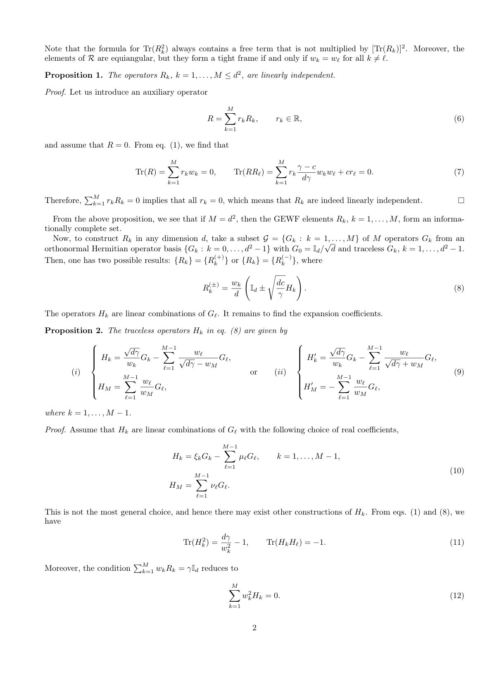
<figcaption class="paper-figure-caption"><b>Fig 1.</b> Low-resolution page preview, page 2</figcaption>
</figure>
<figure class="paper-figure-card">

<figcaption class="paper-figure-caption"><b>Fig 2.</b> Low-resolution page preview, page 3</figcaption>
</figure>
<figure class="paper-figure-card">
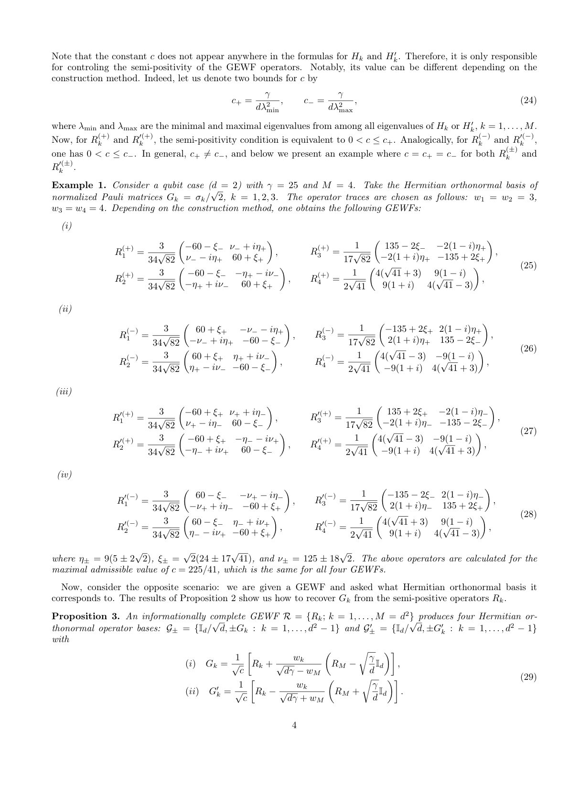
<figcaption class="paper-figure-caption"><b>Fig 3.</b> Low-resolution page preview, page 4</figcaption>
</figure>
<figure class="paper-figure-card">
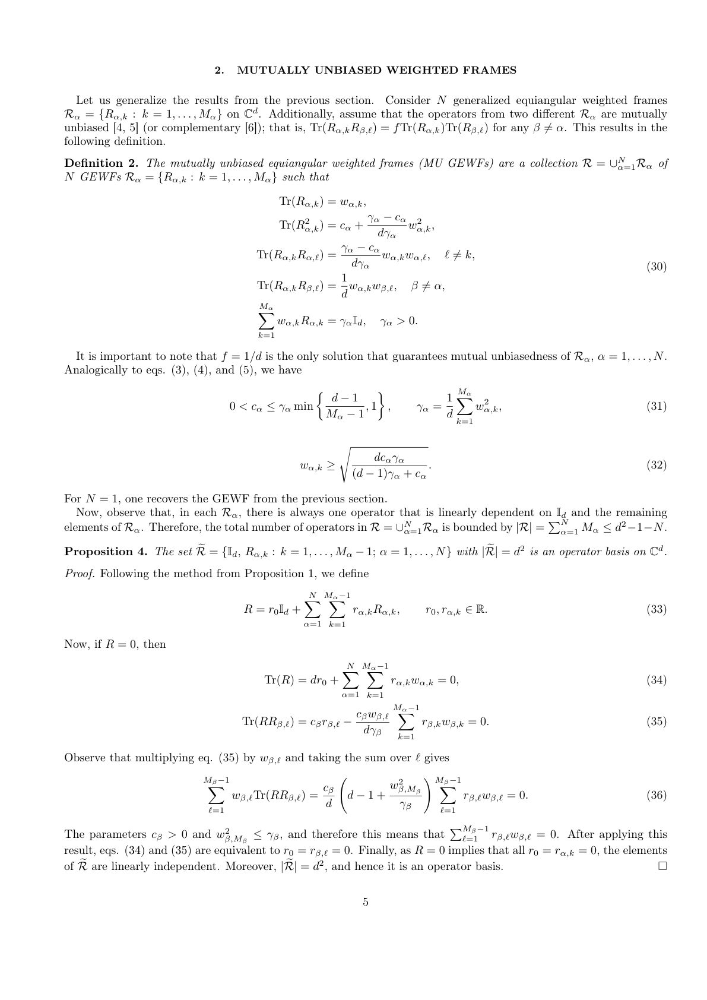
<figcaption class="paper-figure-caption"><b>Fig 4.</b> Low-resolution page preview, page 5</figcaption>
</figure>
<figure class="paper-figure-card">

<figcaption class="paper-figure-caption"><b>Fig 5.</b> Low-resolution page preview, page 6</figcaption>
</figure>
</div>

<p><strong>Summary.</strong> This paper develops a rigorous mathematical framework to characterize conical 2-designs using generalized weighted frames. It proves that MU GEWFs form such designs under the condition of uniform parameter scaling across all frame sets. This advances the theory of informationally complete measurements in quantum systems.</p>
<p><strong>Why it may be interesting.</strong> This work provides deep structural characterizations for measurement operators beyond simple projector measurements, which is crucial for understanding optimal quantum state tomography and quantum channel estimation.</p>
<details>
<summary>Detailed structure</summary>
<p><strong>Main problem.</strong> The primary goal is characterizing conical 2-designs, especially those whose constituent operators do not possess equal traces, to advance the understanding of informationally overcomplete quantum measurements.</p>
<p><strong>Main result.</strong> It establishes that Mutually Unbiased Generalized Equiangular Weighted Frames (MU GEWFs) are special cases of conical 2-designs if and only if a characteristic parameter remains constant across all sets ($  ext{c}_\alpha \equiv c$).</p>
<p><strong>Method.</strong> The work employs generalizations of equiangular weighted frames to non-projective operators, utilizing detailed trace conditions and linear algebra proofs to construct and analyze these operator families.</p>
<p><strong>Model / system.</strong> The theory is developed for quantum systems on a $d$-dimensional (qudit) Hilbert space ($\mathbb{C}^d$), focusing on collections of semi-positive operators $\{R_{\alpha,k}\}$ that act as generalized measurements or frames.</p>
<p><strong>Key observables.</strong> Conical 2-design parameters ($\kappa_+$, $\kappa_-$), the index of coincidence ($C(
ho)$), and various trace conditions involving weights ($w_k$) and correlation terms ($  ext{Tr}(R_k R_\ell)$).</p>
<p><strong>Important parameters / regimes.</strong> The dimension $d$ of the Hilbert space, the number of frames $N$, and characteristic parameters like $\gamma_\alpha$ and $c_\alpha$.</p>
<p><strong>Assumptions / limitations.</strong> Assumptions include assuming specific forms for auxiliary operators ($H_k$) during derivation, and noting that MU GEWFs are generally not POVMs.</p>
<p><strong>Figures summary.</strong> The notes do not describe figures; they detail mathematical derivations involving equations (e.g., Equations 13-19, 52-61) which establish relationships between parameters and structures.</p>
<p><strong>Paper structure.</strong> The paper progresses by first defining Generalized Equiangular Weighted Frames (GEWFs), then constructing Mutually Unbiased GEWFs (MU GEWFs), and finally proving the equivalence conditions that link these frames to the definition of a conical 2-design, culminating in bounds on quantum information measures.</p>
</details>
<details>
<summary>Abstract</summary>
<p>Conical 2-designs are families of positive operators possessing crucial symmetry properties that allow them to efficiently characterize important quantum measures. However, little is known about their general structures and properties. We propose a construction method of conical 2-designs whose elements are not of equal traces, based on a generalization of equiangular weighted frames to non-projective operators. We provide a detailed analysis of their properties, relations to quantum measurements, and applications, together with examples that go beyond the known classes. This constitutes a major step toward a full characterization of informationally overcomplete quantum measurements.</p>
</details>
<p><sub><a href="#top">↑ back to top</a></sub></p>

<p><a id="paper-2607.04766"></a></p>
<h3 id="strain-and-potential-controlled-tunneling-in-monolayer-mosmath823math"><a href="http://arxiv.org/abs/2607.04766v1">Strain- and potential-controlled tunneling in monolayer MoS$_2$</a></h3>
<p><strong>Authors:</strong> Hasna Chnafa, Rachid El Aitouni, Clarence Cortes, David Laroze, Ahmed Jellal<br>
<strong>Type:</strong> theory · <strong>Category:</strong> other · <strong>PDF:</strong> <a href="https://arxiv.org/pdf/2607.04766v1">https://arxiv.org/pdf/2607.04766v1</a><br>
<strong>Analysis basis:</strong> full PDF text, analyzed in chunks
<strong>Topic relevance:</strong> <code>spintronics-quantum-optics interface</code> <strong>3/5</strong> · <code>Keldysh / 2PI / non-Gaussian methods</code> <strong>1/5</strong> · <code>non-equilibrium dynamics</code> <strong>1/5</strong></p>
<div class="figure-strip-hint">↔ Scroll figures horizontally</div>
<div class="paper-figures-scroll">
<figure class="paper-figure-card">

<figcaption class="paper-figure-caption"><b>Fig 1.</b> FIG. 1. Schematic illustration of a molybdenum disulfide MoS2 sheet under a uniaxial strain field and an external scalar electrostatic potential applied along the transport direction x, which divides the sheet into three distinct regions.</figcaption>
</figure>
<figure class="paper-figure-card">

<figcaption class="paper-figure-caption"><b>Fig 2.</b> FIG. 2. The energy E (16) of region II versus the wave vector qx for barrier height V0 = 1 eV and different strain values ε = 0, 0.05, 0.1, 0.15. The K valley is displayed in (a) while K′ in (b).</figcaption>
</figure>
<figure class="paper-figure-card">

<figcaption class="paper-figure-caption"><b>Fig 3.</b> Figure 2 displays the energy E in region II versus the wave vector qx for a barrier height V0 = 1 eV and different strain values ε, with (a): valley K and (b): while valley K′. In both cases, the bands exhibit a parabolic dis- persion characteristic of massive carriers in MoS2, with a clear separation between the spin states sz = +1 and sz = −1, due to strong spin-orbit coupling [7, 42–44]. This separation depends on the valley: the order of spin levels is reversed between K and K′, which is a direct sig- nature of spin–valley locking in transition metal dichalco- genides. The increase in deformation ε causes an overall shift of the bands towards higher energies and a slight change in their...</figcaption>
</figure>
<figure class="paper-figure-card">
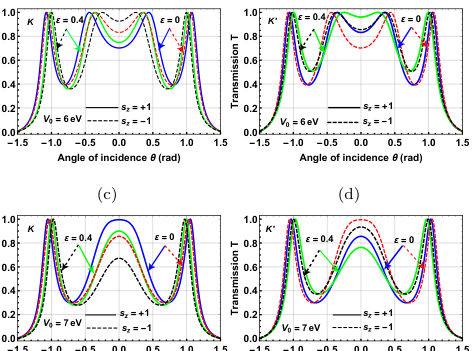
<figcaption class="paper-figure-caption"><b>Fig 4.</b> FIG. 3. Transmission probability versus the angle of incidence θ in K and K′ valleys for E = 2 eV, L = 4 nm, ε = 0, 0.4 and two barrier height values (a)/(b): V0 = 6 eV, (c)/(d): V0 = 7 eV.</figcaption>
</figure>
<figure class="paper-figure-card">
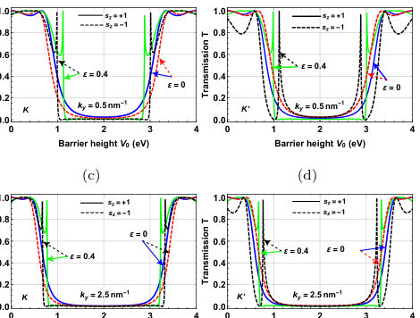
<figcaption class="paper-figure-caption"><b>Fig 5.</b> FIG. 4. Transmission probability versus the barrier height V0 in K and K′ valleys for E = 2 eV, L = 1 nm, ε = 0, 0.4 and two wave vector values (a)/(b): ky = 0.5 nm−1, (c)/(d): ky = 2.5 nm−1</figcaption>
</figure>
</div>

<p><strong>Summary.</strong> This theoretical study details how combining mechanical strain and electrostatic gating can independently control spin and valley polarization in monolayer MoS2. By analyzing quantum transport through potential barriers, the authors reveal a powerful 'dual-knob' mechanism for tuning conductance resonances and predict novel effects like gate-tunable spin inversion.</p>
<p><strong>Why it may be interesting.</strong> This work demonstrates advanced quantum engineering principles—using external fields (strain/potential) to manipulate fundamental symmetries (spin/valley)—which is highly relevant to designing next-generation spintronic and valleytronic devices.</p>
<details>
<summary>Detailed structure</summary>
<p><strong>Main problem.</strong> The study investigates spin- and valley-resolved quantum transport in monolayer MoS2 when subjected to the simultaneous influence of mechanical strain and an external scalar potential.</p>
<p><strong>Main result.</strong> The interplay between strain and potential allows for independent, orthogonal control over both valley and spin polarization. Specifically, they predict a dual-knob control scheme and demonstrate electrostatic spin inversion purely via gate tuning at finite strain.</p>
<p><strong>Method.</strong> The authors employed theoretical modeling using an effective massive Dirac Hamiltonian incorporating intrinsic spin-orbit coupling to calculate electron transmission coefficients by matching boundary conditions across potential barriers.</p>
<p><strong>Model / system.</strong> The system is monolayer MoS2, modeled using a k.p approach with an effective Hamiltonian that includes terms for strain (acting as a gauge field) and an external electrostatic barrier potential. The transport is analyzed in the presence of valley (K/K') and spin degrees of freedom.</p>
<p><strong>Key observables.</strong> Spin polarization ($P_s$), valley polarization ($P_v$), conductance, and Fabry-Pérot resonance characteristics.</p>
<p><strong>Important parameters / regimes.</strong> Mechanical strain ($\epsilon$), barrier width ($L$), incident energy ($E$), and the strength of the potential ($V_0$).</p>
<p><strong>Assumptions / limitations.</strong> The model assumes a continuum effective Dirac Hamiltonian, neglects disorder effects (like impurity scattering), and treats the barriers as perfectly sharp rectangular profiles.</p>
<p><strong>Figures summary.</strong> Figures illustrate schematic setups showing strain/potential application; results show how transmission probability ($T$) exhibits resonances whose frequency is controlled by $L$ and whose phase/amplitude are independently tuned by $\epsilon$.</p>
<p><strong>Paper structure.</strong> The paper establishes the theoretical framework using a modified Dirac Hamiltonian, derives the coupled differential equations for transport across a barrier, calculates transmission coefficients via boundary matching, and finally analyzes how varying strain and potential allows for independent control over spin and valley polarization.</p>
</details>
<details>
<summary>Abstract</summary>
<p>We present a theoretical study of spin- and valley-resolved quantum transport in monolayer MoS$_2$ under the combined influence of mechanical strain and an external scalar potential, a combination whose simultaneous unexplored. Within an effective massive Dirac Hamiltonian that incorporates intrinsic spin--orbit coupling, strain induces valley-dependent momentum shifts that lift the degeneracy between the $K$ and $K'$ valleys and strongly modify the transport characteristics. The scalar potential modifies the tunneling spectrum, leading to pronounced changes in resonant transmission, Fabry--Pérot interference, and conductance. We show that the interplay between strain and electrostatic potential enables efficient control of both valley and spin polarization of the transmitted current. In particular, we identify a dual-knob control scheme in which the barrier width governs the frequency of conductance oscillations while strain independently controls their phase and amplitude. Furthermore, we predict electrostatic spin inversion -- a sign reversal of spin polarization achievable purely by gate tuning at finite strain, requiring no geometric reconfiguration. Depending on the strain orientation, the transmission probability and conductance can be selectively suppressed or enhanced, resulting in highly tunable valley- and spin-polarized transport. These findings demonstrate that strain and potential engineering provide orthogonal and independently operable mechanisms for controlling conductance as well as spin and valley degrees of freedom in monolayer MoS$_2$, offering promising prospects for spintronic and valleytronic device applications.</p>
</details>
<p><sub><a href="#top">↑ back to top</a></sub></p>

<p><a id="paper-2607.03902"></a></p>
<h3 id="experimental-signatures-of-bosonic-pairing-in-a-two-component-bose-gas"><a href="http://arxiv.org/abs/2607.03902v1">Experimental signatures of bosonic pairing in a two-component Bose gas</a></h3>
<p><strong>Authors:</strong> Omar Almonajed, M. Iskin, M. Ö. Oktel<br>
<strong>Type:</strong> theory · <strong>Category:</strong> quantum gases · <strong>PDF:</strong> <a href="https://arxiv.org/pdf/2607.03902v1">https://arxiv.org/pdf/2607.03902v1</a><br>
<strong>Analysis basis:</strong> full PDF text, analyzed in chunks
<strong>Topic relevance:</strong> <code>analog quantum simulation</code> <strong>3/5</strong> · <code>Keldysh / 2PI / non-Gaussian methods</code> <strong>1/5</strong></p>
<div class="figure-strip-hint">↔ Scroll figures horizontally</div>
<div class="paper-figures-scroll">
<figure class="paper-figure-card">

<figcaption class="paper-figure-caption"><b>Fig 1.</b> FIG. 1. (a) Grand-potential density as a function of the interaction-strength ratio a12/a, spanning the attrac- tive mean-field-stable regime and extending into the droplet regime. The blue solid curve denotes bosonic pairing the- ory, and the black dashed curve denotes Bogoliubov theory. Values in panel (a) are measured in units of E0 = ℏ2/(ma5). (b) Chemical potential µ and pairing field ∆0 as functions of a12/a across the mean-field-to-droplet crossover. The blue solid and blue dash-dotted curves denote µ and ∆0 in bosonic pairing theory, respectively, while the black dashed and black dotted curves denote the corresponding Bogoli- ubov results. Values in panel (b) are measured in units...</figcaption>
</figure>
<figure class="paper-figure-card">

<figcaption class="paper-figure-caption"><b>Fig 2.</b> FIG. 2. Same as Fig. 1, but for a tenfold higher density. In both panels, the per-species density is fixed at na3 = 0.5 × 10−2. The differences between the Bogoliubov and bosonic pairing theories become more pronounced at higher density, particularly in the droplet regime.</figcaption>
</figure>
<figure class="paper-figure-card">

<figcaption class="paper-figure-caption"><b>Fig 3.</b> FIG. 3. Intraspecies normal fraction ˜n/n and interspecies anomalous fraction ˜m12/n as functions of the interaction- strength ratio a12/a, spanning the attractive mean-field- stable regime and extending into the droplet regime. The blue solid and black dashed curves denote ˜n/n in bosonic pairing theory and Bogoliubov theory, respectively. The blue dash-dotted and black dotted curves denote the correspond- ing results for ˜m12/n. The per-species density is fixed at na3 = 0.5 × 10−3.</figcaption>
</figure>
<figure class="paper-figure-card">

<figcaption class="paper-figure-caption"><b>Fig 4.</b> FIG. 4. Momentum-space interspecies correlations for a symmetric two-component bosonic gas at fixed density na3 = 0.5 × 10−3 in the mean-field-stable regime. (a) Normalized anomalous correlation h(2) 12,A(k). (b) Normalized normal cor-</figcaption>
</figure>
<figure class="paper-figure-card">
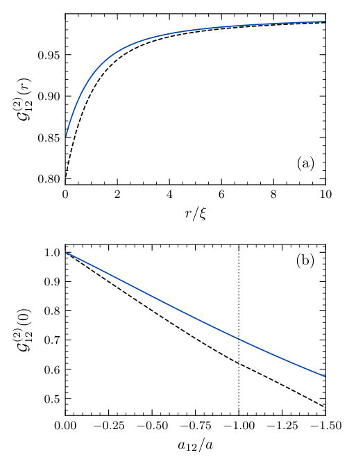
<figcaption class="paper-figure-caption"><b>Fig 5.</b> FIG. 5. Ultraviolet-renormalized interspecies two-body correlation function G(2) 12 (r) for a symmetric two-component bosonic gas. (a) Real-space dependence at fixed density na3 = 0.5 × 10−3 and interaction ratio a12/a = −0.5, cor- responding to the attractive mean-field-stable regime. Both theories approach the uncorrelated limit at large separations but differ at short distances. (b) Short-distance limit G(2) 12 (0) across the gas-to-droplet crossover. The vertical dotted line marks the mean-field instability, a12/a = −1, which coincides with the droplet transition. Blue solid curves denote bosonic pairing theory, and black dashed curves denote Bogoliubov theory. In the droplet regime,...</figcaption>
</figure>
</div>

<p><strong>Summary.</strong> The paper rigorously compares bosonic pairing theory against conventional Bogoliubov theory for describing quantum fluctuations in two-component Bose gases approaching the droplet regime. It demonstrates that bosonic pairing yields lower thermodynamic potentials and predicts distinct correlation signatures, particularly measurable via low-momentum structure factors. This provides a crucial theoretical tool to experimentally distinguish between different microscopic descriptions of strongly interacting quantum fluids.</p>
<p><strong>Why it may be interesting.</strong> This work directly addresses the limitations of standard mean-field descriptions (like Bogoliubov theory) when strong correlations or instability regimes (like droplet formation) are present in ultracold atomic gases, offering a testable alternative description.</p>
<details>
<summary>Detailed structure</summary>
<p><strong>Main problem.</strong> The paper compares two theoretical frameworks, Bogoliubov theory and bosonic pairing theory, to describe quantum fluctuations in a two-component Bose gas across the crossover into the droplet regime.</p>
<p><strong>Main result.</strong> Bosonic pairing theory predicts distinct signatures compared to Bogoliubov theory, including a lower grand potential and unique correlation structures measurable via static structure factors at low momentum.</p>
<p><strong>Method.</strong> The authors reformulate bosonic pairing theory using an operator formalism and compare its predictions against the standard mean-field plus fluctuation approach of Bogoliubov theory.</p>
<p><strong>Model / system.</strong> The system is a homogeneous, two-component Bose gas (homonuclear binary mixture) with tunable interactions, analyzed across the transition from a weakly interacting gas to a quantum droplet state.</p>
<p><strong>Key observables.</strong> Grand potential ($\Omega$), excitation spectra, interspecies momentum-space correlations, and species-resolved static structure factors ($S_{ij}(q)$).</p>
<p><strong>Important parameters / regimes.</strong> Interaction strengths (especially attractive interspecies interactions $g_{12} < 0$), particle density, and the low-momentum transfer limit ($q 	o 0$).</p>
<p><strong>Assumptions / limitations.</strong> The comparison focuses on the regime where both theories yield real excitation spectra; bosonic pairing theory utilizes a static pairing-field approximation.</p>
<p><strong>Figures summary.</strong> Figures compare $G^{(2)}_{12}(r)$ (real-space correlations) and $S_{ij}(q)$ (static structure factors) across the crossover, highlighting quantitative differences between the two theories at low momentum transfer.</p>
<p><strong>Paper structure.</strong> The paper develops the theoretical framework for both models, calculates key observables like the grand potential and correlation functions, and concludes by comparing the distinct predictions of bosonic pairing theory against established results from Bogoliubov theory.</p>
</details>
<details>
<summary>Abstract</summary>
<p>Two-component bosonic droplets are commonly described within Bogoliubov theory, where beyond-mean-field quantum fluctuations stabilize the system against mean-field collapse. In the interaction regime where droplets form, however, the Bogoliubov excitation spectrum contains an imaginary branch associated with the underlying instability, which is typically omitted when evaluating the beyond-mean-field energy. Bosonic pairing theory provides an alternative description with a fully real excitation spectrum. In this work, we reformulate bosonic pairing theory within an operator formalism, making its underlying approximations transparent, and compare its predictions with those of Bogoliubov theory for a homonuclear binary Bose mixture across the crossover from a weakly interacting gas to the droplet regime. Working at fixed particle density, we determine the variational parameters of bosonic pairing theory self-consistently and focus on the regime in which both theories possess real excitation spectra, allowing a direct comparison. We find that bosonic pairing theory yields a lower grand potential than Bogoliubov theory and predicts qualitatively distinct correlation signatures, including enhanced long-wavelength interspecies momentum-space correlations and a finite density static structure factor at experimentally accessible low momenta. These differences persist over a broad range of interaction strengths and suggest that correlation and structure-factor measurements can provide direct experimental tests of bosonic pairing across the gas-to-droplet crossover.</p>
</details>
<p><sub><a href="#top">↑ back to top</a></sub></p>

<p><a id="paper-2607.05195"></a></p>
<h3 id="integral-representations-of-math843math-divergences-for-general-von-neumann-algebras"><a href="http://arxiv.org/abs/2607.05195v1">Integral representations of $f$-divergences for general von Neumann algebras</a></h3>
<p><strong>Authors:</strong> Ricardo Correa da Silva, Markus B. Fröb, Gandalf Lechner, Leonardo Sangaletti<br>
<strong>Type:</strong> theory · <strong>Category:</strong> other · <strong>PDF:</strong> <a href="https://arxiv.org/pdf/2607.05195v1">https://arxiv.org/pdf/2607.05195v1</a><br>
<strong>Analysis basis:</strong> full PDF text, analyzed in chunks
<strong>Topic relevance:</strong> <code>entanglement &amp; information structure</code> <strong>3/5</strong> · <code>Keldysh / 2PI / non-Gaussian methods</code> <strong>1/5</strong></p>
<div class="figure-strip-hint">↔ Scroll figures horizontally</div>
<div class="paper-figures-scroll">
<figure class="paper-figure-card">

<figcaption class="paper-figure-caption"><b>Fig 1.</b> Low-resolution page preview, page 2</figcaption>
</figure>
<figure class="paper-figure-card">

<figcaption class="paper-figure-caption"><b>Fig 2.</b> Low-resolution page preview, page 3</figcaption>
</figure>
<figure class="paper-figure-card">

<figcaption class="paper-figure-caption"><b>Fig 3.</b> Low-resolution page preview, page 4</figcaption>
</figure>
<figure class="paper-figure-card">
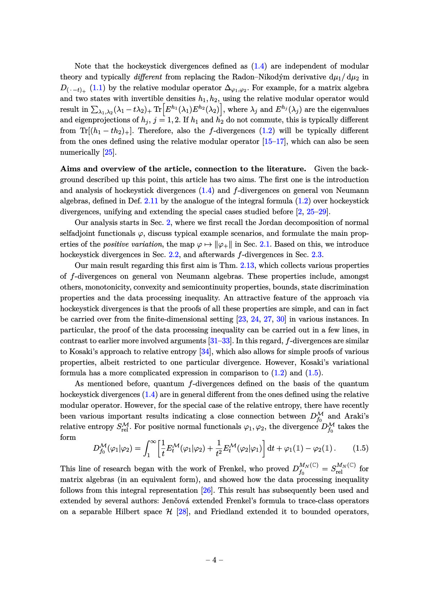
<figcaption class="paper-figure-caption"><b>Fig 4.</b> Low-resolution page preview, page 5</figcaption>
</figure>
<figure class="paper-figure-card">

<figcaption class="paper-figure-caption"><b>Fig 5.</b> Low-resolution page preview, page 6</figcaption>
</figure>
</div>

<p><strong>Summary.</strong> This paper develops generalized $f$-divergences and hockeystick divergences for states defined on general von Neumann algebras. By leveraging properties derived from functional decompositions, it proves that these measures unify previous results and rigorously establishes the equivalence between a specific $f$-divergence ($f_0$) and Araki's relative entropy in this abstract quantum setting.</p>
<p><strong>Why it may be interesting.</strong> This work provides a rigorous mathematical generalization of fundamental concepts from classical information theory (like KL divergence) into the abstract setting of infinite-dimensional quantum operator algebras, which is crucial for understanding quantum hypothesis testing in complex systems.</p>
<details>
<summary>Detailed structure</summary>
<p><strong>Main problem.</strong> The paper defines and analyzes $f$-divergences and hockeystick divergences for normal positive functionals on general von Neumann algebras, aiming to generalize classical probability measures to quantum settings.</p>
<p><strong>Main result.</strong> It establishes that the $f_0$-divergence (when $f_0(t) = t \ln t$) coincides with Araki's relative entropy ($   ext{S}_{    ext{rel}}$) for general von Neumann algebras, unifying several state distinguishability measures.</p>
<p><strong>Method.</strong> The analysis relies on representing the divergences as integrals over hockeystick divergences, whose properties are derived from the Jordan decomposition of selfadjoint normal functionals. The connection to relative entropy is shown via limiting procedures and comparison with known traces in semifinite cases.</p>
<p><strong>Model / system.</strong> The mathematical framework uses general von Neumann algebras ($M$) to model quantum systems, where states are represented by normal positive functionals ($\phi$). The classical limit is recovered when $M = L^\infty(X, \mu)$.</p>
<p><strong>Key observables.</strong> State distinguishability measures, including $f$-divergences ($    ext{DM}<em ext_rel="ext{rel">f$), hockeystick divergences ($E_M^t$), and Araki's relative entropy ($    ext{S}</em>$).}</p>
<p><strong>Important parameters / regimes.</strong> The function $f$ defining the divergence; the parameter $t$ in the hockeystick definition; limits involving $\epsilon \searrow 0$.</p>
<p><strong>Assumptions / limitations.</strong> The existence of normal positive functionals on general von Neumann algebras and the applicability of spectral theory and trace properties.</p>
<p><strong>Paper structure.</strong> The paper progresses by defining hockeystick divergences, generalizing them to $f$-divergences on von Neumann algebras, proving key properties using Jordan decomposition, and finally establishing the equivalence between the resulting $f_0$-divergence and relative entropy through limiting arguments.</p>
</details>
<details>
<summary>Abstract</summary>
<p>We define and analyze hockeystick divergences and $f$-divergences for normal positive functionals on general von Neumann algebras, generalizing and unifying previous work in classical probability and finite-dimensional von Neumann algebras. All the main properties of these state distinguishability measures (including in particular monotonicity, convexity, semicontinuity, bounds, state discrimination, data processing inequality) are derived from properties of the Jordan decomposition of selfadjoint normal functionals. This is done by representing the $f$-divergences as integrals over hockeystick divergences, and their significance in quantum hypothesis testing is reviewed. The $f_0$-divergence given by the information function $f_0(t) = t \ln t$ is shown to coincide with Araki's relative entropy, extending results of Frenkel to general von Neumann algebras.</p>
</details>
<p><sub><a href="#top">↑ back to top</a></sub></p>

<p><a id="paper-2607.04110"></a></p>
<h3 id="circuit-design-informed-adaptive-variational-quantum-algorithms"><a href="http://arxiv.org/abs/2607.04110v1">Circuit Design Informed Adaptive Variational Quantum Algorithms</a></h3>
<p><strong>Authors:</strong> Muhammad Umer, Dimitris G. Angelakis<br>
<strong>Type:</strong> theory · <strong>Category:</strong> quantum information and computing · <strong>PDF:</strong> <a href="https://arxiv.org/pdf/2607.04110v1">https://arxiv.org/pdf/2607.04110v1</a><br>
<strong>Analysis basis:</strong> full PDF text, analyzed in chunks
<strong>Topic relevance:</strong> <code>analog quantum simulation</code> <strong>2/5</strong> · <code>measurement-induced transitions</code> <strong>2/5</strong> · <code>quantum measurements</code> <strong>2/5</strong> · <code>Keldysh / 2PI / non-Gaussian methods</code> <strong>1/5</strong> · <code>driven-dissipative phase transition</code> <strong>1/5</strong> · <code>entanglement &amp; information structure</code> <strong>1/5</strong> · <code>methods for driven-dissipative</code> <strong>1/5</strong></p>
<div class="figure-strip-hint">↔ Scroll figures horizontally</div>
<div class="paper-figures-scroll">
<figure class="paper-figure-card">

<figcaption class="paper-figure-caption"><b>Fig 1.</b> FIG. 1. (a) Hadamard test and (b, c) HT constrained ans¨atze. Here, n is the number of qubits in the register, d is the number of layers, and Ui = U(λi) is a controlled pa- rameterized gate. In the construction of ans¨atze, X gate at the beginning of circuits is controlled by the ancilla qubit, thereby establishing ancilla−register correlations. Panel (b) and (c) illustrate two distinct layouts.</figcaption>
</figure>
<figure class="paper-figure-card">
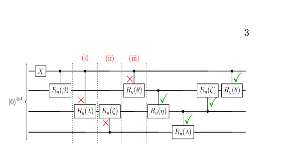
<figcaption class="paper-figure-caption"><b>Fig 2.</b> FIG. 3. Constraints embedded in the gate pool Opool. Here, (i)–(iii) highlight three classes of constraints, namely: (i) qubit connectivity constraint of the hardware platform, (ii) circuit design, i.e., the Hadamard test constraint, and (iii) non-redundancy constraints that prevent immediate re- selection of gates acting on the same qubit(s) by temporarily removing them from the candidate pool.</figcaption>
</figure>
<figure class="paper-figure-card">
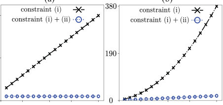
<figcaption class="paper-figure-caption"><b>Fig 3.</b> FIG. 2. Scaling behavior of the gate pool Opool at the first iteration of adaptive frameworks. (a) and (b) correspond to the nearest-neighbor connectivity in a ring topology and all- to-all connectivity, respectively. Here, constraints (i) and (ii) are imposed by qubit connectivity and Hadamard test circuit design, respectively.</figcaption>
</figure>
<figure class="paper-figure-card">

<figcaption class="paper-figure-caption"><b>Fig 4.</b> FIG. 4. Behavior of state infidelity as a function of number of gates in the layered HT ans¨atze. State infidelity quantifies the deviation of the variational state from the target classi- cal ground state. Results are shown for g = 250 in panels (a, b) and for g = 750 in panels (c, d). In addition, layer configuration A and B is adopted in panels (a, c) and (b, d), respectively.</figcaption>
</figure>
<figure class="paper-figure-card">
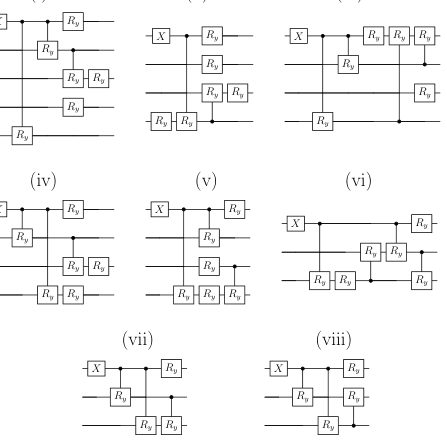
<figcaption class="paper-figure-caption"><b>Fig 5.</b> FIG. 6. Adaptive HT ans¨atze. Panels are organized accord- ing to both system size and nonlinear interaction strength. Here, n = 5 for panel (i), n = 4 in panels (ii−v), and n = 3 in panels (vi−viii). Additionally, g = 250, 500, 750, and 1000 correspond respectively to panels (i, ii, vi), (iii, vii), (iv, viii), and (v, viii).</figcaption>
</figure>
</div>

<p><strong>Summary.</strong> This paper tackles the challenge of building efficient quantum algorithms for NISQ devices by integrating circuit design principles into adaptive VQA frameworks. By constraining the selection of candidate gates using structures like the Hadamard Test, the authors significantly reduce measurement overheads. This demonstrates a crucial pathway toward making variational quantum simulations more feasible on near-term hardware.</p>
<p><strong>Why it may be interesting.</strong> This work directly addresses practical hardware limitations in quantum computation by providing algorithmic techniques that systematically reduce resource requirements for variational methods applied to physical models like the NLSE.</p>
<details>
<summary>Detailed structure</summary>
<p><strong>Main problem.</strong> Developing resource-efficient variational quantum algorithms (VQAs) suitable for the Noisy Intermediate-Scale Quantum (NISQ) era by systematically incorporating circuit design constraints.</p>
<p><strong>Main result.</strong> Incorporating structural constraints, such as those derived from the Hadamard Test circuit, can reduce measurement overhead in adaptive VQA frameworks by 25% to over 55%.</p>
<p><strong>Method.</strong> The authors employ an adaptive framework that iteratively constructs variational ansätze while pruning the candidate gate pool using hardware-aware and problem-specific constraints.</p>
<p><strong>Model / system.</strong> The work is benchmarked on approximating the ground state of the nonlinear Schrödinger equation (NLSE) Hamiltonian, which involves discretizing the spatial domain via finite differences.</p>
<p><strong>Key observables.</strong> State infidelity ($F'$), measurement overhead/required measurement resources, and the size of the candidate gate pool ($\mathcal{O}_{	ext{pool}}$).</p>
<p><strong>Important parameters / regimes.</strong> Nonlinearity strength ($g$), system size ($n$ qubits), and convergence indicators like $\epsilon_k$.</p>
<p><strong>Assumptions / limitations.</strong> The analysis assumes that incorporating circuit design constraints systematically reduces measurement overhead, although the authors note that layered ansätze may not always be optimal.</p>
<p><strong>Figures summary.</strong> Figures illustrate Hadamard test circuits, comparisons of gate pool scaling (showing pruning), and state infidelity ($F'$) vs. number of gates for both constrained adaptive methods and fixed layered ansatzes.</p>
<p><strong>Paper structure.</strong> The paper introduces the resource limitations of NISQ devices, proposes an adaptive VQA framework incorporating circuit design constraints (like HT structure) to manage measurement overhead, benchmarks this approach on the NLSE ground state problem, and compares its performance against less constrained or fixed-layer ansätze.</p>
</details>
<details>
<summary>Abstract</summary>
<p>Resource-efficient computation is of central importance in the noisy intermediate-scale quantum (NISQ) era, where decoherence, gate errors, and restricted qubit connectivity severely limit the reliable execution of quantum algorithms. In this work, we demonstrate that incorporating circuit design considerations is crucial for developing resource-efficient variational quantum algorithms. By focusing on the Hadamard test circuit architecture, hardware-aware qubit connectivity, and problem-specific adaptive framework, we analyze how circuit design constraints can systematically reduce the measurement overhead associated with repeated evaluations of the candidate gate pool in adaptive algorithms. Specifically, we demonstrate reductions in the required measurement resources ranging from at least 25% to as high as 50% - 55%. To assess the effectiveness of our approach, we investigate the ground state problem of the nonlinear Schrödinger equation. Overall, our work contributes to resource-friendly strategies for quantum computation and underscores that algorithmic frameworks should systematically integrate circuit design constraints with hardware-aware and problem-specific structures to enhance the practical feasibility of quantum devices in the NISQ era.</p>
</details>
<p><sub><a href="#top">↑ back to top</a></sub></p>

<p><a id="paper-2607.04584"></a></p>
<h3 id="quantum-random-walks-on-d-regular-graphs-with-haar-random-coin-operators"><a href="http://arxiv.org/abs/2607.04584v1">Quantum random walks on d-regular graphs with Haar-random coin operators</a></h3>
<p><strong>Authors:</strong> Alice C. Quillen<br>
<strong>Type:</strong> theory · <strong>Category:</strong> other · <strong>PDF:</strong> <a href="https://arxiv.org/pdf/2607.04584v1">https://arxiv.org/pdf/2607.04584v1</a><br>
<strong>Analysis basis:</strong> full PDF text, analyzed in chunks
<strong>Topic relevance:</strong> <code>non-equilibrium dynamics</code> <strong>2/5</strong> · <code>analog quantum simulation</code> <strong>1/5</strong> · <code>correlated / nonlocal dissipation</code> <strong>1/5</strong> · <code>driven-dissipative phase transition</code> <strong>1/5</strong> · <code>entanglement &amp; information structure</code> <strong>1/5</strong> · <code>measurement-induced transitions</code> <strong>1/5</strong> · <code>methods for driven-dissipative</code> <strong>1/5</strong> · <code>non-equilibrium universality</code> <strong>1/5</strong> · <code>quantum measurements</code> <strong>1/5</strong></p>
<div class="figure-strip-hint">↔ Scroll figures horizontally</div>
<div class="paper-figures-scroll">
<figure class="paper-figure-card">

<figcaption class="paper-figure-caption"><b>Fig 1.</b> FIG. 1. A quantum circuit illustration of a quantum walk based on a d-regular graph that takes place on a quantum space that is the tensor product of a d-dimensional coin space and an N dimensional vertex space. The controlled shift op- erator ΛS (outlined in green and defined in equation 3) per- mutes the vertices with operators ˆ Wj (defined in equation 2) depending upon the graph edge that is selected via one of the states in the coined subspace. The coin operator ˆC operates on the coin-subspace where it can induce superposition. The pair of operations is outlined in blue and is iterated to carry out the walk.</figcaption>
</figure>
<figure class="paper-figure-card">

<figcaption class="paper-figure-caption"><b>Fig 2.</b> FIG. 2. a) An illustration of the quantum random walk on the cycle graph with a Hadamard-coin. The initial state was 1 √</figcaption>
</figure>
</div>

<p><strong>Summary.</strong> This paper analyzes quantum random walks on regular graphs using coin operators drawn randomly from the Haar measure. While this averaging process causes decoherence in the coin subspace, the authors show that specific measurements on the vertex positions can still retain information about the initial state. This suggests a mechanism for probing initial conditions even in strongly perturbed open quantum systems.</p>
<p><strong>Why it may be interesting.</strong> This work provides a theoretical framework for understanding quantum transport in systems where environmental coupling or internal dynamics cause strong, random perturbations (decoherence) to one subsystem.</p>
<details>
<summary>Detailed structure</summary>
<p><strong>Main problem.</strong> The study investigates quantum random walks on d-regular graphs when the coin operator is randomly drawn from the Haar measure at each step.</p>
<p><strong>Main result.</strong> Despite the averaged channel causing depolarization in the coin subspace, measurements restricted to the vertex subspace can still reveal information about the initial state over many iterations.</p>
<p><strong>Method.</strong> The analysis involves computing the expectation value of the quantum evolution operator over the Haar distribution of the coin unitary, leading to an averaged quantum channel.</p>
<p><strong>Model / system.</strong> The model is a quantum random walk on a bipartite space ($\mathcal{C}_d \otimes \mathcal{C}_N$) defined by a controlled shift unitary. Examples are tested on Cayley graphs of Abelian groups like cycles and hypercubes.</p>
<p><strong>Key observables.</strong> Correlation functions between vertices ($p_{vv'}(
ho(t))$) and the variance ($\sigma^2_{\hat{B}}(t)$) of position measurements.</p>
<p><strong>Important parameters / regimes.</strong> The graph degree $d$, number of vertices $N$, and time evolution $t$. The Haar-random nature of the coin operator is central.</p>
<p><strong>Assumptions / limitations.</strong> The analysis assumes that for certain graphs, information retention can be tracked via specific off-diagonal eigenstates in the Fourier basis. It also notes limitations regarding general undirected graphs versus Abelian group Cayley graphs.</p>
<p><strong>Figures summary.</strong> Figure 1 illustrates the quantum circuit structure of the QRW. Figure 2 compares probability distributions for walks with Hadamard vs. Haar-random coins on a cycle graph, showing convergence to classical behavior.</p>
<p><strong>Paper structure.</strong> The paper first defines the model and the averaged channel (Chunk 2). It then analyzes how this averaging affects information retention by looking at correlation functions and position variance over time (Chunks 3 &amp; 4).</p>
</details>
<details>
<summary>Abstract</summary>
<p>With unitary coin operator that is a random matrix drawn from a uniform distribution with respect to the Haar measure, we construct a variant of a discrete quantum random walk using a d-regular undirected connected simple graph. With each step of the walk, the coin operator random matrix is drawn independently from the distribution. The expectation value over the distribution of random unitaries for the associated quantum channel gives a depolarization channel for the coin subspace and resembles the associated classical random walk where the direction a walker steps depends upon the outcome of a fair coin or balanced d-sided dice. Remarkably, despite the fact that the averaged channel depolarizes the coin subspace, measurements in the vertex subspace can be designed that would reveal information about the initial quantum state, even after many iterations of the channel. We illustrate with examples of quantum walks on Cayley graphs of Abelian groups, such as the cycle and hypercube graphs. These quantum walks are examples of bipartite strongly interacting systems, where one subsystem is strongly perturbed, yet information about the initial state in the other subsystem is potentially measurable forever. Due to its decoherence, a quantum random walk with a Haar-random coin would not be useful in search algorithms but could aid in understanding quantum systems with strongly perturbed subsystems.</p>
</details>
<p><sub><a href="#top">↑ back to top</a></sub></p>

<p><a id="paper-2607.04966"></a></p>
<h3 id="super-molasses-returns-all-optical-near-resonance-laser-cooling-and-trapping-of-neutral-atoms-from-background-vapor"><a href="http://arxiv.org/abs/2607.04966v1">Super-molasses returns: All optical near-resonance laser cooling and trapping of neutral atoms from background vapor</a></h3>
<p><strong>Authors:</strong> Matt Himsworth, Chester Camm, Max Carey, Jack Saywell, Jonathan Woods, Vilius Atkoucius, Florence Concepcion, Konstantinos Karakostas, Hannah Brady, Doruk Tan Atila, Ellie Heywood, Alex Jantzen, Andrei Dragomir, Christopher Morley, James Bateman<br>
<strong>Type:</strong> experiment · <strong>Category:</strong> other · <strong>PDF:</strong> <a href="https://arxiv.org/pdf/2607.04966v1">https://arxiv.org/pdf/2607.04966v1</a><br>
<strong>Analysis basis:</strong> full PDF text, analyzed in chunks
<strong>Topic relevance:</strong> <code>non-equilibrium dynamics</code> <strong>2/5</strong> · <code>quantum optics experiment</code> <strong>2/5</strong> · <code>analog quantum simulation</code> <strong>1/5</strong> · <code>correlated / nonlocal dissipation</code> <strong>1/5</strong> · <code>driven-dissipative phase transition</code> <strong>1/5</strong> · <code>interference shaping light</code> <strong>1/5</strong> · <code>methods for driven-dissipative</code> <strong>1/5</strong> · <code>non-equilibrium universality</code> <strong>1/5</strong></p>
<div class="figure-strip-hint">↔ Scroll figures horizontally</div>
<div class="paper-figures-scroll">
<figure class="paper-figure-card">
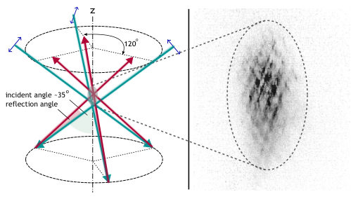
<figcaption class="paper-figure-caption"><b>Fig 1.</b> FIG. 1: Left: The laser beam geometry used in this paper to produce the super-molasses trap, with incident (green) beams forming a tripod and angled from the vertical by 35◦and retro-reflected (red) beams misaligned by very small angles. Polarization is linear as shown in blue, although the trap can operate with circular and combinations of polarization. Right: A (inverted greyscale) fluorescence image of the trapped ensemble of rubidium atoms. The laser beams have been aligned to produce an extended cloud to highlight the lattice structure. The vertical dimension of the cloud is approximately 3 mm. Denser and more spherical clouds can be obtained with different beam reflection angles.</figcaption>
</figure>
<figure class="paper-figure-card">

<figcaption class="paper-figure-caption"><b>Fig 2.</b> FIG. 2: A photograph of the SMT taken along the z-axis of Figure 1). The three retro-reflected beams can be seen scattering on the top chamber window, at the center of which is the brighter cold atom cloud.</figcaption>
</figure>
<figure class="paper-figure-card">

<figcaption class="paper-figure-caption"><b>Fig 3.</b> FIG. 3: Dependence of atom number in the SMT on laser detuning and power. We see a peak of approximately 2.5 million atoms at -1 Γ detuning and 10 mW per beam. The peak atom number is highly dependent on beam alignments but once a global maximum is found the atom number is quite consistent for the same beam width.</figcaption>
</figure>
<figure class="paper-figure-card">

<figcaption class="paper-figure-caption"><b>Fig 4.</b> FIG. 4: Top: The trapped ensemble temeratues before the ’molasses’ stage for a selection of detunings. The solid lines are linear fits to guide the eye, and the dashed line indicates the Doppler Temperature for 87Rb. Middle: The trapped ensemble temperature after a ‘molasses’ stage during which the laser detuning is shifted to the displayed frequency in 2 ms, whilst the power is linearly ramped down to different final values. Solid lines are linear fits to guide the eye. Bottom: An example of the ensemble radius expansion data (dots) used calculate the temperature (lines). We see the temperature is uniform along both axes.</figcaption>
</figure>
<figure class="paper-figure-card">
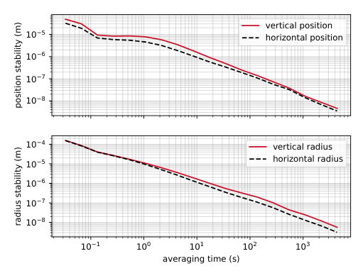
<figcaption class="paper-figure-caption"><b>Fig 5.</b> FIG. 5: The Allan Deviation of the trap centre (Top) and size (Bottom) over several timescales. The center is determined by fitting of a 2D Gaussian to absorption image. Short term instability is dominated by vibrations of the undamped table due to nearby traffic.</figcaption>
</figure>
</div>

<p><strong>Summary.</strong> The authors introduce the Super-Molasses Trap (SMT), a novel method to cool and trap dense clouds of neutral atoms using only intersecting laser beams, completely eliminating the need for external magnetic fields. The technique achieves performance comparable to MOTs—including high atom numbers and sub-$\mu	ext{K}$ temperatures—making it a powerful new tool for quantum applications.</p>
<p><strong>Why it may be interesting.</strong> This work presents a robust, field-free alternative to established trapping methods, which is highly relevant for quantum sensing and metrology where magnetic shielding or field gradients are undesirable. The investigation into the fundamental mechanism of super-molasses cooling touches upon complex non-equilibrium dynamics in open quantum systems.</p>
<details>
<summary>Detailed structure</summary>
<p><strong>Main problem.</strong> To describe an alternative laser cooling and trapping method for neutral atoms that operates without relying on a magnetic field, overcoming limitations associated with traditional Magneto-Optical Traps (MOTs).</p>
<p><strong>Main result.</strong> The Super-Molasses Trap (SMT) successfully traps dense clouds of cold atoms ($>10^6$ atoms at $\sim 2 	imes 10^{10} 	ext{atoms/cm}^3$) using only laser beams, achieving sub-$\mu	ext{K}$ temperatures.</p>
<p><strong>Method.</strong> The technique utilizes a simple geometry of retro-reflected collimated laser beams in a tripod configuration to create a position and velocity dependent restoring force, supplemented by an 'optical molasses' stage for final cooling.</p>
<p><strong>Model / system.</strong> The system involves trapping neutral atoms (e.g., $^{87}	ext{Rb}$) from background vapor using intersecting, misaligned laser beams that form a dissipative optical lattice structure, contrasting with the magnetic field dependence of MOTs.</p>
<p><strong>Key observables.</strong> Atom number ($>2 	imes 10^6$), density ($\sim 2 	imes 10^{10} 	ext{atoms/cm}^3$), ensemble temperature (cooled to sub-$\mu	ext{K}$), and trap loading rate ($2 	imes 10^7 	ext{atoms/s}$).</p>
<p><strong>Important parameters / regimes.</strong> Laser detuning ($   ext{-}1\Gamma$ optimal), laser power ($22 	ext{mW/cm}^2$), background vapor pressure (optimal near $2 	imes 10^{-9} 	ext{mbar}$), and the absence of magnetic field dependence.</p>
<p><strong>Assumptions / limitations.</strong> The trapping mechanism is believed to utilize principles related to super-molasses cooling within a near-resonant dipole trap, although a full quantitative theoretical explanation remains elusive.</p>
<p><strong>Figures summary.</strong> Figures show the laser beam geometry (tripod), the dependence of atom number on detuning/power, and temperature reduction curves demonstrating the effectiveness of the optical molasses stage.</p>
<p><strong>Paper structure.</strong> The paper introduces the SMT as an alternative to MOTs, details the experimental setup and measurements (atom number, density, cooling), compares performance metrics, discusses stability and loading rates, and concludes with a theoretical discussion on the underlying physics.</p>
</details>
<details>
<summary>Abstract</summary>
<p>Laser cooled and trapped atoms have been the workhorse of atomic physics for the past four decades. The predominant method has been the highly versatile Magneto-Optical Trap. We describe an alternative laser trap involving a simple geometry of collimated laser beams that provides both a velocity and position dependent restoring force such that a dense cloud of cold atoms is formed. This technique produces similar atom number ($>10^6$) and density ($10^{10}$\,atoms/cm$^{3}$) to the Magneto-Optical Trap, albeit with \emph{no magnetic field}. The beam geometry is compatible with conventional sub-Doppler cooling techniques, allowing the trapped cloud to be cooled to $< 10~μ$K. We demonstrate the validity and robustness of the trap by capturing $^{87}$Rb atoms directly from the background vapor and provide a theoretical discussion of the underlying principles. This trap has many unique properties that make it highly suitable for quantum sensing, timing, and computing applications as well as a new tool in fundamental science and metrology.</p>
</details>
<p><sub><a href="#top">↑ back to top</a></sub></p>

<p><a id="paper-2607.05218"></a></p>
<h3 id="quasi-holonomy-in-non-adiabatic-quantum-evolution"><a href="http://arxiv.org/abs/2607.05218v1">Quasi-holonomy in non-adiabatic quantum evolution</a></h3>
<p><strong>Authors:</strong> Erik Sjöqvist, Adam Fredriksson<br>
<strong>Type:</strong> theory · <strong>Category:</strong> other · <strong>PDF:</strong> <a href="https://arxiv.org/pdf/2607.05218v1">https://arxiv.org/pdf/2607.05218v1</a><br>
<strong>Analysis basis:</strong> full PDF text, analyzed in chunks
<strong>Topic relevance:</strong> <code>non-equilibrium dynamics</code> <strong>2/5</strong> · <code>Keldysh / 2PI / non-Gaussian methods</code> <strong>1/5</strong> · <code>analog quantum simulation</code> <strong>1/5</strong> · <code>correlated / nonlocal dissipation</code> <strong>1/5</strong> · <code>driven-dissipative phase transition</code> <strong>1/5</strong> · <code>entanglement &amp; information structure</code> <strong>1/5</strong> · <code>methods for driven-dissipative</code> <strong>1/5</strong> · <code>non-equilibrium universality</code> <strong>1/5</strong></p>
<div class="figure-strip-hint">↔ Scroll figures horizontally</div>
<div class="paper-figures-scroll">
<figure class="paper-figure-card">

<figcaption class="paper-figure-caption"><b>Fig 1.</b> Low-resolution page preview, page 2</figcaption>
</figure>
<figure class="paper-figure-card">
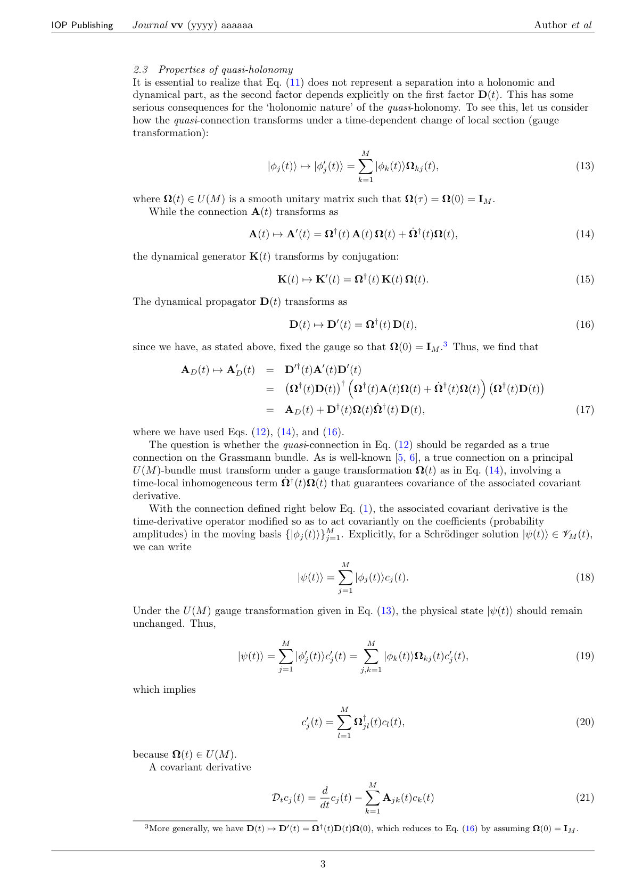
<figcaption class="paper-figure-caption"><b>Fig 2.</b> Low-resolution page preview, page 3</figcaption>
</figure>
<figure class="paper-figure-card">

<figcaption class="paper-figure-caption"><b>Fig 3.</b> Low-resolution page preview, page 4</figcaption>
</figure>
<figure class="paper-figure-card">
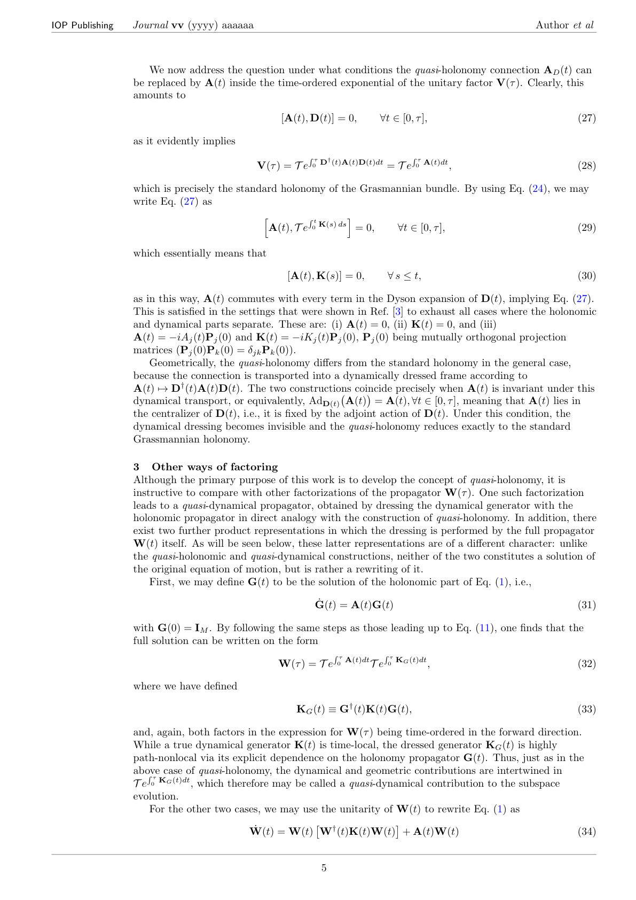
<figcaption class="paper-figure-caption"><b>Fig 4.</b> Low-resolution page preview, page 5</figcaption>
</figure>
<figure class="paper-figure-card">

<figcaption class="paper-figure-caption"><b>Fig 5.</b> Low-resolution page preview, page 6</figcaption>
</figure>
</div>

<p><strong>Summary.</strong> The paper develops a framework to analyze the separation of quantum subspace evolution into geometric (holonomic) and dynamical parts. By examining the quasi-connection derived from factoring the Schrödinger equation on the Grassmannian, the authors prove that this connection is not truly geometric due to history-dependent gauge transformations. This shows that in non-adiabatic regimes, quantum geometry and dynamics remain fundamentally intertwined.</p>
<p><strong>Why it may be interesting.</strong> This work provides deep theoretical insight into geometric phases in open or non-adiabatic quantum systems by formalizing when and why simple factorization methods fail, which has implications for understanding decoherence and adiabatic passage protocols.</p>
<details>
<summary>Detailed structure</summary>
<p><strong>Main problem.</strong> The paper investigates how to separate the quantum time evolution of subspaces into purely geometric (holonomic) and dynamical components when evolving along loops in a complex Grassmannian.</p>
<p><strong>Main result.</strong> The quasi-connection derived from factoring the Schrödinger evolution does not define a genuine connection because its gauge transformation acquires an unavoidable, history-dependent term, implying that geometric and dynamical effects are generally inseparable.</p>
<p><strong>Method.</strong> The authors develop a framework by factoring the Schrödinger evolution into contributions associated with a dynamical propagator $D(t)$ and a quasi-connection $   ext{AD}(t)$, analyzing the resulting gauge transformation properties.</p>
<p><strong>Model / system.</strong> The system models the time evolution of $M$-dimensional subspaces within an $N$-dimensional Hilbert space, mathematically described by paths on the complex Grassmannian $G(N; M)$ and governed by a matrix differential equation derived from the Schrödinger equation.</p>
<p><strong>Key observables.</strong> The quasi-connection $ ext{AD}(t) \equiv D^\dagger(t)  ext{A}(t)D(t)$, and its comparison to the transformation law of a true connection.</p>
<p><strong>Important parameters / regimes.</strong> Cyclic evolution ($\Omega(	au) = \mathrm{IM}$), non-adiabatic regime, and the structure of the Hamiltonian generators $K(t)$ and $A(t)$.</p>
<p><strong>Assumptions / limitations.</strong> The analysis is restricted to cyclic evolution; the core limitation is that separation fails due to gauge-theoretic obstructions.</p>
<p><strong>Figures summary.</strong> Not specified by the notes provided, but the structure revolves around comparing different factorizations of the propagator $W(	au)$ (Eqs. 11, 25, 32) and analyzing their transformation properties.</p>
<p><strong>Paper structure.</strong> The paper establishes the general evolution equation for subspaces, proposes factoring it using a dynamical propagator to define a quasi-connection ($ ext{AD}(t)$), rigorously proves that this quasi-connection fails the criteria of a true connection due to history dependence, and concludes that separation is generally impossible.</p>
</details>
<details>
<summary>Abstract</summary>
<p>We develop a framework for quasi-holonomy in non-adiabatic quantum time evolution of subspaces along loops in a complex Grassmannian. By factoring the Schrödinger evolution into dynamical and connection-induced contributions in a moving basis, we obtain an effective geometric generator that depends explicitly on the dynamical propagator. This quasi-connection does not define a genuine connection on the original Grassmann bundle, since its gauge transformation law acquires a history-dependent, nonlocal term. Other ways of factoring the Schrödinger evolution are briefly discussed. All these approaches suffer from the same type of history-dependence, thereby defining transport of subspaces in which geometric and dynamical effects are generally intertwined, just as in the case of the quasi-holonomy. Our work sheds light on the issue of separating quantum evolution of subspaces into holonomic and dynamical parts from an essentially gauge-theoretic perspective.</p>
</details>
<p><sub><a href="#top">↑ back to top</a></sub></p>

<p><a id="paper-2607.04693"></a></p>
<h3 id="supercritical-fluid-of-quantum-electrons-in-three-dimensional-superconducting-fullerides"><a href="http://arxiv.org/abs/2607.04693v1">Supercritical fluid of quantum electrons in three-dimensional superconducting fullerides</a></h3>
<p><strong>Authors:</strong> Xinying Li, Yuki Matsuda, Chongli Yang, Huaxue Zhou, Takuma Ogasawara, Qin Wang, Liguo Zhang, Hidekazu Shimotani, Hailiang Xia, Khuong K. Huynh, Panagiotis Kotetes, Satoshi Heguri, Katsumi Tanigaki<br>
<strong>Type:</strong> both · <strong>Category:</strong> strongly correlated electrons · <strong>PDF:</strong> <a href="https://arxiv.org/pdf/2607.04693v1">https://arxiv.org/pdf/2607.04693v1</a><br>
<strong>Analysis basis:</strong> full PDF text, analyzed in chunks
<strong>Topic relevance:</strong> <code>driven-dissipative phase transition</code> <strong>2/5</strong> · <code>non-equilibrium universality</code> <strong>2/5</strong> · <code>Keldysh / 2PI / non-Gaussian methods</code> <strong>1/5</strong> · <code>Kondo &amp; dissipative impurity</code> <strong>1/5</strong> · <code>analog quantum simulation</code> <strong>1/5</strong> · <code>exotic spin models in light-matter</code> <strong>1/5</strong> · <code>non-equilibrium dynamics</code> <strong>1/5</strong></p>
<div class="figure-strip-hint">↔ Scroll figures horizontally</div>
<div class="paper-figures-scroll">
<figure class="paper-figure-card">
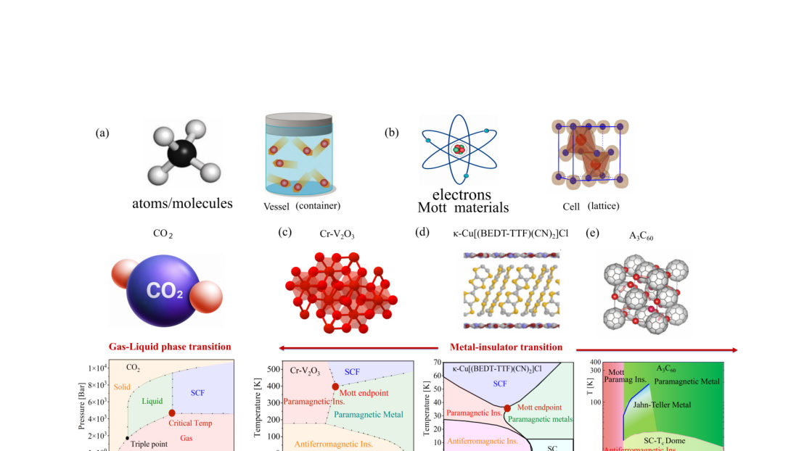
<figcaption class="paper-figure-caption"><b>Fig 1.</b> Fig. 1 Phase transition without symmetry breaking and supercritical fluid phase (SCF).| (a) Phase transition between G and L phases in elemental atoms and molecules in a container without symmetry breaking and a supercritical fluid (SCF) phase emergent above the critical temperature (a red point). (b) Quantum electrons, in a crystal cell. In Mott materials ((c) Cr-V2O3 and (d) κ-(BEDT- TTF)2Cu[N(CN)2]Cl), a similar phase diagram exhibiting an SCF phase is reported. The SCF phase originates from the Mott endpoint (MEP, red-colored point). (e) CsxRb3-xC60 fullerides, Mott uncon- ventional superconductors, exhibit an MIT (blue line), but neither MEP nor SCF was reported. Supercritical fluid...</figcaption>
</figure>
<figure class="paper-figure-card">
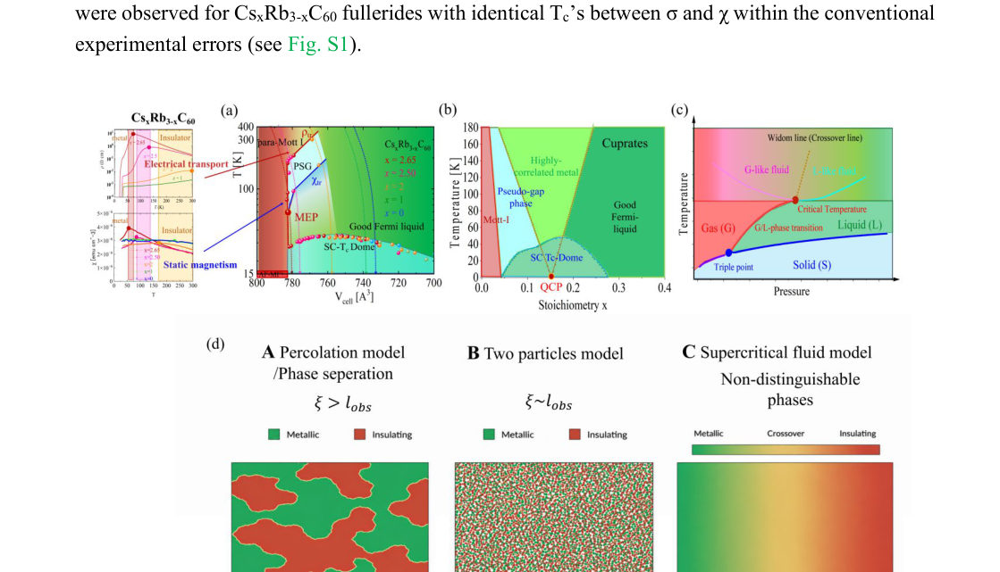
<figcaption class="paper-figure-caption"><b>Fig 2.</b> Fig. 2 T-V(T, P) phase diagram of CsxRb3-xC60 fullerides displaying an M-I coexisting SCF phase inferred from electrical resistivities and static magnetic susceptibilities.| (a) The onset temperatures of the MIT observed in ρ under ambient and high pressure of CsxRb3-xC60 fullerides give a different MIT line (red) from the one (blue) drawn based on χ. The two lines originate from the single common point, i.e., the so-called Mott endpoint (MEP). The same SC Tc-dome is observed, within experimental accuracy, in both ρ and χ. (b) Phase diagram of carrier-tuned high-Tc cuprates generally reported in the literature15, where a PSG phase observed at finite T is frequently discussed in connection...</figcaption>
</figure>
<figure class="paper-figure-card">
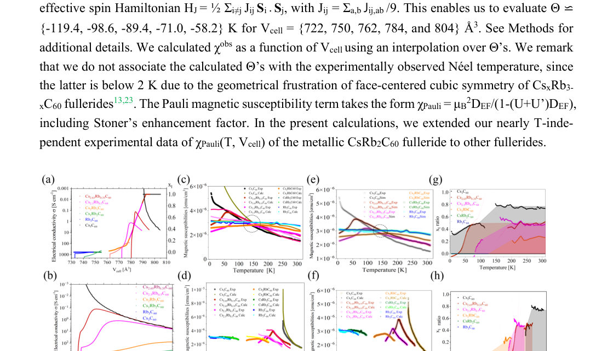
<figcaption class="paper-figure-caption"><b>Fig 3.</b> Fig. 3 The experimental σ(T, V) and χ(T, V) values for various stoichiometric CsxRb3-xC60 full- erides under ambient pressure.| Three Cs2.65Rb0.35C60 (red), Cs2.5Rb0.5C60 (pink), and Cs2Rb1C60 (or- ange) exhibit the clear MIT’s. (a,b) The σ values of various stoichiometric CsxRb3-xC60 fullerides under ambient P as a function of Vcell and T. The values χ and σ of Cs3C60 were taken from the literatures13,24, respectively. (c-f) The comparison of χ between experimental (pale wide lines) and calculated (dark narrow lines) data. The analyses were performed as x = xIχCW + xMχPauli with xI + xM = 1, where xI and xM are the ratios of I and M, and χCW and χPauli are the localized Curie-Weiss and...</figcaption>
</figure>
<figure class="paper-figure-card">
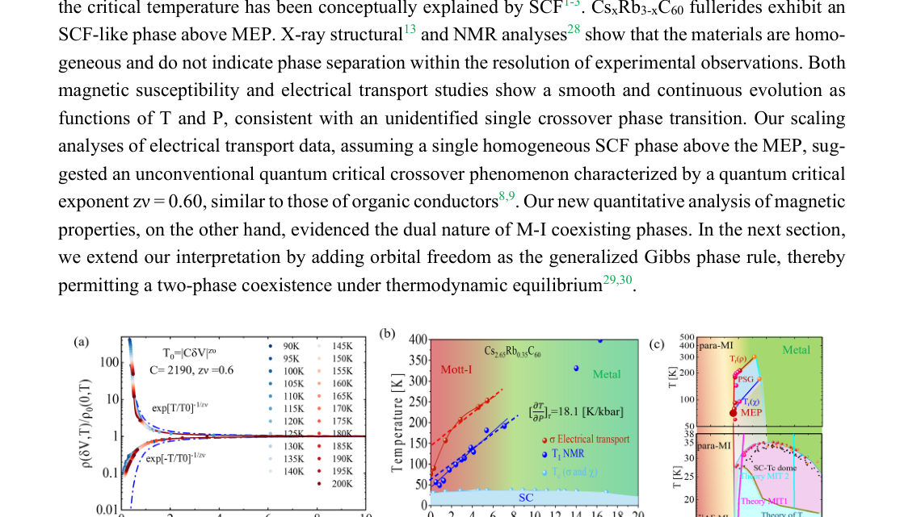
<figcaption class="paper-figure-caption"><b>Fig 4.</b> Fig. 4 Scaling based on electrical transports, Clapeyron Clausius Law, and T-V(T, P) phase diagram with comparison to DMFT theoretical calculations.| (a) Scaling of ρ(V-V0,T)/ρ0(T,0) = F[T/(C(V-V0))zν] based on electrical transport data in Cs2.65Rb0.35C60 under various pressure (SI.4 and SI.9). (b) The slope of the MIT (∂T/∂P) exhibits a good agreement between electrical transport (our work) and NMR relaxation times28 at temperatures under the dynamic Jahn-Teller effect as described in the text. The MIT slope can be assessed from the volume (∆Vcell) and the entropy change (∆S) at</figcaption>
</figure>
</div>

<p><strong>Summary.</strong> This paper reports the first experimental identification of a supercritical fluid phase of quantum electrons at the Mott transition in superconducting fullerides. By simultaneously measuring both electrical conductivity and magnetic susceptibility, the authors confirm two distinct metal-insulator transition lines meeting at a single Mott endpoint. This dual-probe approach yields a unified picture of the correlated electron physics in these materials.</p>
<p><strong>Why it may be interesting.</strong> This work provides strong experimental evidence for a specific theoretical state (SCF) in correlated materials using multiple complementary measurements, which is highly relevant to understanding complex many-body ground states beyond simple mean-field treatments.</p>
<details>
<summary>Detailed structure</summary>
<p><strong>Main problem.</strong> The study investigates the elusive supercritical fluid (SCF) phase of quantum electrons at the Mott metal-insulator transition (MIT) in strongly correlated fullerides.</p>
<p><strong>Main result.</strong> The authors report the first experimental identification of a thermodynamically equilibrated SCF phase and its associated Mott endpoint using dual probes ($\sigma$ and $\chi$), revealing convergence of two distinct MIT lines.</p>
<p><strong>Method.</strong> A combination of independent experimental measurements (electrical conductivity and magnetic susceptibility) with theoretical analysis, including hypothesis-free two-particle analyses and thermodynamic scaling laws.</p>
<p><strong>Model / system.</strong> The physical system is the superconducting fulleride $  ext{Cs}<em 3-x>x   ext{Rb}</em>$. Theoretical modeling involves an effective spin Hamiltonian ($H_J$) derived from orbital couplings, used to analyze magnetic susceptibility ($\chi$).}   ext{C}_{60</p>
<p><strong>Key observables.</strong> Electrical conductivity ($\sigma$), magnetic susceptibility ($\chi$), critical exponents ($
u z$), and the identification of a Mott endpoint (MEP).</p>
<p><strong>Important parameters / regimes.</strong> The stoichiometry ($x$ in $ ext{Cs}<em 3-x>x   ext{Rb}</em>}   ext{C<em ext_cell="ext{cell">{60}$), temperature (T), pressure/volume ($V</em>$), and the critical exponents derived from scaling analysis.}</p>
<p><strong>Assumptions / limitations.</strong> Assumes thermodynamic equilibrium for the SCF phase, utilizes a dual-probe approach to overcome limitations of single observables, and employs model Hamiltonians for theoretical fitting.</p>
<p><strong>Figures summary.</strong> Figures illustrate phase diagrams ($T$-$V$ or $T$-$P$), showing the newly emergent M-I coexisting SCF zone above the MEP. Other figures compare experimental $\sigma(T, V)$ and $\chi(T, V)$ across different stoichiometries.</p>
<p><strong>Paper structure.</strong> The paper progresses by establishing the problem (elusive SCF), presenting the dual-probe methodology ($\sigma$ vs. $\chi$), confirming the existence of the MEP via convergence of two MIT lines, and finally providing a unified microscopic picture for the Mott SCF phase.</p>
</details>
<details>
<summary>Abstract</summary>
<p>The supercritical fluid (SCF) of quantum electrons at the Mott metal-insulator transition without symmetry breaking is one of the most elusive phenomena in strongly correlated electron physics. Prior studies of Cr-doped V2O3 and organic Mott systems reported discrepant critical exponents. A key limitation is that the scaling analysis relies on a single experimental observable, leaving the roles of phase coexistence, inhomogeneity, and percolation unaddressed. Here we report the first experimental identification of a thermodynamically equilibrated SCF phase and its associated Mott endpoint in the three-dimensional superconducting fullerides CsxRb3-xC60, using two independent probes of electrical conductivity and magnetic susceptibility, which reveal two distinct metal-insulator transition lines converging at a single Mott endpoint. A hypothesis-free two-particle analysis of magnetic susceptibilities yields a metal-insulator coexisting SCF by exhibiting the maximum two-phase mixing entropy, in agreement with a picture of a thermodynamically equilibrated Widom line. Simultaneously, conductivity scaling yields a critical exponent in the regime of quantum critical predictions. Our new dual-probe approach provides a unified microscopic picture of the Mott SCF with a characteristic length scale below current diffraction resolution, in addition to a new interpretation on the origin of superconducting Tc-dome.</p>
</details>
<p><sub><a href="#top">↑ back to top</a></sub></p>

<p><a id="paper-2607.03545"></a></p>
<h3 id="cellular-adaptation-to-signal-fluctuations-as-learning"><a href="http://arxiv.org/abs/2607.03545v1">Cellular Adaptation to Signal Fluctuations as Learning</a></h3>
<p><strong>Authors:</strong> Tuan Minh Pham, David Saad<br>
<strong>Type:</strong> theory · <strong>Category:</strong> disordered systems and neural networks · <strong>PDF:</strong> <a href="https://arxiv.org/pdf/2607.03545v1">https://arxiv.org/pdf/2607.03545v1</a><br>
<strong>Analysis basis:</strong> full PDF text, analyzed in chunks
<strong>Topic relevance:</strong> <code>non-equilibrium dynamics</code> <strong>2/5</strong> · <code>non-equilibrium universality</code> <strong>2/5</strong> · <code>Keldysh / 2PI / non-Gaussian methods</code> <strong>1/5</strong> · <code>correlated / nonlocal dissipation</code> <strong>1/5</strong> · <code>driven-dissipative phase transition</code> <strong>1/5</strong> · <code>methods for driven-dissipative</code> <strong>1/5</strong></p>
<div class="figure-strip-hint">↔ Scroll figures horizontally</div>
<div class="paper-figures-scroll">
<figure class="paper-figure-card">
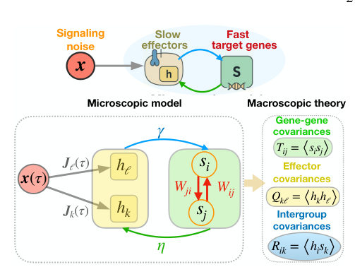
<figcaption class="paper-figure-caption"><b>Fig 1.</b> FIG. 1. Top. Illustration of an intracellular pathway (marked by the shaded area) of effectors (labeled by h) and target genes (denoted by s). The pathway is subjected to fluctuations of an external signal depicted by x. Bottom. Our microscopic model (7)-(8) and its corre- sponding macroscopic theory in terms of collective covariances (14)- (15). Here fluctuations vary over a slow time τ. The M effectors integrate these fluctuations into their states hℓ(τ) via an interpreta- tion matrix Jℓα (denoted by black arrows): hℓ(τ) = P</figcaption>
</figure>
<figure class="paper-figure-card">
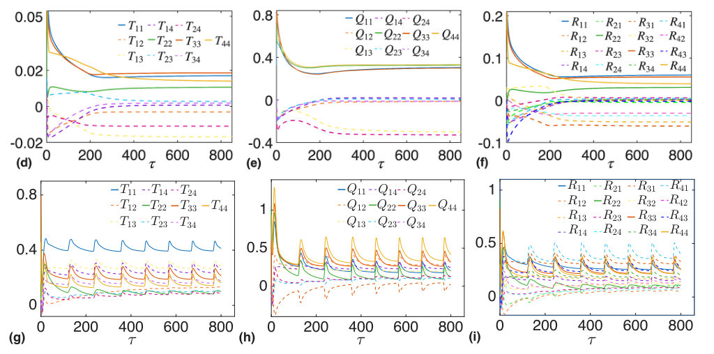
<figcaption class="paper-figure-caption"><b>Fig 2.</b> FIG. 2. The target gene correlations T , the effectors’ covariations Q, the cross-correlations between the target genes and their effectors R, all as function of the slow time τ for (η, γ) = (0.5, 0.5) in (a)-(c) (η, γ) = (0.9, 0.5) in (d)-(f) for (η, γ) = (0.9, 0.9) in (g)-(i). Here c = 0.2, σ = 0.01, K = 4 and W is a random asymmetric matrix of i.i.d. elements drawn from U(0, 1) – the uniform distribution in the interval (0, 1). Initial conditions for Q and T are specified by Qii and Tii, both drawn from U(0, 1), while Qij and Tij – are sampled from the uniform distribution 10−6 × U(0, 1). All elements of R(τ = 0) are drawn from the uniform distribution 10−6 × U(0, 1).</figcaption>
</figure>
<figure class="paper-figure-card">
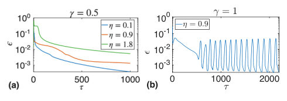
<figcaption class="paper-figure-caption"><b>Fig 3.</b> FIG. 3. γ = 0.5 (a) and γ = 1 (b). Here c = 0.2, σ = 0.01, K = 4, and W is an asymmetric matrix of uncorrelated elements drawn from U(0, 1) – the uniform distribution in the interval (0, 1). Initial conditions for Q and T are specified by Qii and Tii, both drawn from U(0, 1), while Qij and Tij – are sampled from the uniform distribution 10−6 × U(0, 1). All elements of R(τ = 0) are drawn from the uniform distribution 10−6 × U(0, 1).</figcaption>
</figure>
<figure class="paper-figure-card">
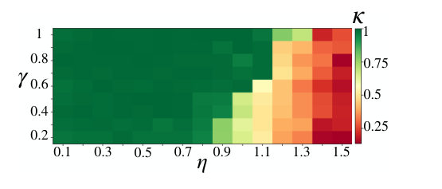
<figcaption class="paper-figure-caption"><b>Fig 4.</b> FIG. 6. Phase diagram for c = 0.2, σ = 0.01, K = 4. Results are obtained by averaging over an ensemble of 100 asymmetric matrices W of uncorrelated elements drawn from U(0, 1). Asymmetric initial condition for Q, T , R as explained in Fig 2.</figcaption>
</figure>
<figure class="paper-figure-card">

<figcaption class="paper-figure-caption"><b>Fig 5.</b> FIG. 4. Symmetric solution for γ = 0.8 ((a)-(c)) and γ = 1 ((d)-(e)). From top to bottom: the ratio κ = ¯r/¯q with ¯r ≡</figcaption>
</figure>
</div>

<p><strong>Summary.</strong> This theoretical paper models cellular adaptation by treating gene regulation as a feedback-driven, non-equilibrium learning process. It derives macroscopic theories for system covariances and shows that robust function emerges when the adaptive mechanism transitions the system into structured collective modes. The work connects concepts from dynamical systems theory to fundamental biological principles of self-regulation.</p>
<p><strong>Why it may be interesting.</strong> The use of non-equilibrium learning rules (gradient descent on an energy mismatch) to stabilize complex dynamical systems mirrors concepts used in optimizing quantum control or understanding thermalization in open quantum systems.</p>
<details>
<summary>Detailed structure</summary>
<p><strong>Main problem.</strong> The study investigates how biological cells achieve robust self-regulation of gene expression despite fluctuating external chemical signals.</p>
<p><strong>Main result.</strong> Robustness against signal fluctuations is achieved through structured collective modes, which emerges beyond a critical adaptation rate in the system's dynamics.</p>
<p><strong>Method.</strong> A multiscale modeling approach is used, combining fast dynamics for target genes with slow, non-equilibrium learning updates for upstream effectors.</p>
<p><strong>Model / system.</strong> The model describes intracellular signaling pathways involving coupled differential equations for gene regulatory networks (GRNs) and adaptive variables that undergo gradient descent based on signal mismatch energy.</p>
<p><strong>Key observables.</strong> Collective modes (covariations) such as $\mathbf{T}(	au)$, $\mathbf{Q}(	au)$, and $\mathbf{R}(	au)$; the gap measure $\Delta Q$.</p>
<p><strong>Important parameters / regimes.</strong> Adaptation rate ($\eta$), coupling strength ($\gamma$), and signal noise variance ($\sigma^2$).</p>
<p><strong>Assumptions / limitations.</strong> The model assumes a separation of timescales between fast gene dynamics and slow effector learning, and that the control term is additively coupled.</p>
<p><strong>Figures summary.</strong> Figures illustrate pathway structure (Fig 1), show multistability at phase boundaries based on ratio $\kappa$ (Fig 8), and demonstrate how the gap measure $\Delta Q$ increases as adaptation rate $\eta$ crosses a critical point (Fig 9).</p>
<p><strong>Paper structure.</strong> The paper builds from defining the multiscale model of signaling pathways, deriving macroscopic theories for component covariations, analyzing parameter regimes to find steady states corresponding to cell types, and finally examining symmetry breaking and multistability in the slow dynamics.</p>
</details>
<details>
<summary>Abstract</summary>
<p>Cells represent one of the most fundamental units of life. Underlying their robust performance against environmental variability, such as temporal fluctuations of chemical signals, between different cell types, is a dynamical interrelation between the two components of an intracellular pathway: a gene-regulatory network and its upstream signal transducers. To understand how a single cell utilizes this feedback to self-regulate its gene-expressions, we develop a multiscale model of the pathway's components, in which the adaptive variables responsible for signal interpretation follow a feedback-induced learning process. We then derive a macroscopic theory capturing the covariations between these components - so-called collective modes. Our theory shows how cells can achieve robust output against signal fluctuations via self-regulation rather than simple noise suppression. Such robustness corresponds to a transition from random- to structured collective modes beyond a critical adaptation rate.</p>
</details>
<p><sub><a href="#top">↑ back to top</a></sub></p>

<p><a id="paper-2607.04950"></a></p>
<h3 id="contraction-and-expansion-values-of-quantum-channels"><a href="http://arxiv.org/abs/2607.04950v1">Contraction and Expansion Values of Quantum Channels</a></h3>
<p><strong>Authors:</strong> Ruben Ibarrondo, Mikel Sanz<br>
<strong>Type:</strong> theory · <strong>Category:</strong> quantum information and computing · <strong>PDF:</strong> <a href="https://arxiv.org/pdf/2607.04950v1">https://arxiv.org/pdf/2607.04950v1</a><br>
<strong>Analysis basis:</strong> full PDF text, analyzed in chunks
<strong>Topic relevance:</strong> <code>entanglement &amp; information structure</code> <strong>2/5</strong> · <code>Keldysh / 2PI / non-Gaussian methods</code> <strong>1/5</strong> · <code>correlated / nonlocal dissipation</code> <strong>1/5</strong> · <code>driven-dissipative phase transition</code> <strong>1/5</strong> · <code>methods for driven-dissipative</code> <strong>1/5</strong></p>
<div class="figure-strip-hint">↔ Scroll figures horizontally</div>
<div class="paper-figures-scroll">
<figure class="paper-figure-card">
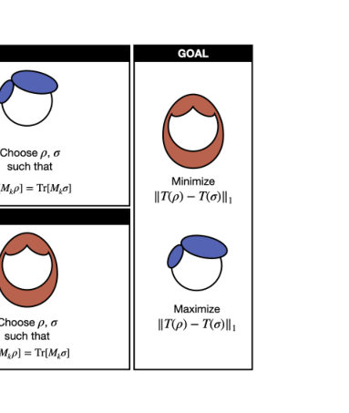
<figcaption class="paper-figure-caption"><b>Fig 1.</b> Figure 1: Given a channel T and an index 1 ≤n ≤d2 −1, Alice and Bob agree on two states ρ and σ to play with. The game consists of Alice randomly choosing one of the states to send through the channel T, and Bob performing arbitrary one-shot measurements to guess which state was sent. The diagrams describe two ways to agree on the states, Bob’s success probability if both choose the optimal strategy is given by (a) the contraction coefficients, or (b) the expansion coefficients.</figcaption>
</figure>
<figure class="paper-figure-card">
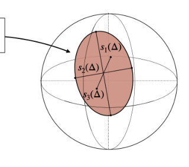
<figcaption class="paper-figure-caption"><b>Fig 2.</b> Figure 2: Under the action of a quantum channel T, the Bloch sphere B is mapped into an ellipsoid T(B), see Eq. (74), contained inside the original sphere. The principal axes of the ellipsoid correspond to the contraction and expansion values of the channel.</figcaption>
</figure>
<figure class="paper-figure-card">

<figcaption class="paper-figure-caption"><b>Fig 3.</b> Figure 3: Relations between s-numbers. The filled arrows point from larger to smaller s-scales and the empty reversed arrows connect dual s-scales, in the sense of Proposition 30.</figcaption>
</figure>
<figure class="paper-figure-card">

<figcaption class="paper-figure-caption"><b>Fig 4.</b> Figure 4: Depicts the decomposition presented in Lemma 32, which expresses the depolarizing channel as a chain of amplitude damping channels and a Hadamard channel. This example takes d = 3 and λ = 0.7 and the initial state |s⟩= 1 √</figcaption>
</figure>
</div>

<p><strong>Summary.</strong> This paper introduces 'contraction' and 'expansion values' as advanced diagnostics for characterizing quantum channels. These sequences refine traditional contraction coefficients by employing variational principles over operator subspaces. They offer crucial composition inequalities necessary for accurately modeling information loss in complex quantum processes.</p>
<p><strong>Why it may be interesting.</strong> This work provides a rigorous mathematical framework for quantifying information loss in open quantum systems that is superior to existing single-number metrics, directly impacting the theoretical understanding of channel capacity.</p>
<details>
<summary>Detailed structure</summary>
<p><strong>Main problem.</strong> The standard contraction coefficient for quantum channels is insufficient because it only captures the most optimistic behavior and fails to describe how channel degradation accumulates under composition.</p>
<p><strong>Main result.</strong> The authors introduce 'contraction' and 'expansion values,' two monotone sequences that refine the original coefficients, providing superior bounds for channel compositions.</p>
<p><strong>Method.</strong> The new values are derived from a min-max variational principle over subspaces of traceless Hermitian operators and are shown to coincide with Gel'fand or Bernstein numbers in Pietsch's theory of s-numbers.</p>
<p><strong>Model / system.</strong> The study focuses on general quantum channels (CPTP maps) acting on density matrices, particularly analyzing their behavior when restricted to the subspace of traceless Hermitian operators ($ ext{Herm}_0(d)$).</p>
<p><strong>Key observables.</strong> Contraction and expansion values ($\hat{\kappa}_n(T), \check{\kappa}_n(T)$); these refine the standard contraction coefficient $\hat{\eta}(T)$.</p>
<p><strong>Important parameters / regimes.</strong> The dimension $d$ of the system, and parameters related to specific channels like amplitude damping decay rates ($\lambda$).</p>
<p><strong>Assumptions / limitations.</strong> The analysis relies on extending concepts from operator norms (like singular values) to a 1-norm context via variational principles.</p>
<p><strong>Figures summary.</strong> Figure 3 illustrates the hierarchy and mathematical relationships between various s-number types (an, cn, dn, etc.) used for characterizing operators. Figure 4 shows the decomposition of a depolarizing channel.</p>
<p><strong>Paper structure.</strong> The paper progresses by first identifying the limitations of $\hat{\eta}(T)$, then introducing the variational definitions ($\hat{\kappa}_n, \check{\kappa}_n$), establishing their relationship to s-numbers and singular values, and finally applying these tools to analyze composite channels like $T_1 \oplus T_2$.</p>
</details>
<details>
<summary>Abstract</summary>
<p>The contraction coefficient of the trace distance is a central tool in quantum information, quantifying how strongly a quantum channel degrades the distinguishability of states. However, being an extremal ratio, it captures only the most optimistic behaviour of the channel and is often trivial, even for very noisy channels. Moreover, a single scalar is poorly suited to describe how contraction accumulates under channel composition. In this work we introduce the \emph{contraction and expansion values}, two monotone sequences that refine the contraction and expansion coefficients in the same way singular values refine the operator norm. They arise from a min--max variational principle over subspaces of traceless Hermitian operators, admit an operational interpretation in terms of two state-discrimination games, and are shown to coincide with the Gel'fand or Bernstein numbers of the channel restricted to traceless operators. This identification places the sequences within Pietsch's theory of $s$-numbers and yields, in particular, bounds under channel composition that the contraction coefficient alone cannot provide. We establish their main structural properties and compute or estimate them for single-qubit channels, $d$-dimensional amplitude damping channels, and direct-sum channels.</p>
</details>
<p><sub><a href="#top">↑ back to top</a></sub></p>
<hr>
<p>
<a href="index.html">← Index</a>
 · <a href="papers_04.html">← Previous</a> · <a href="papers_06.html">Next →</a>
</p>
<hr>

</body>
</html>
